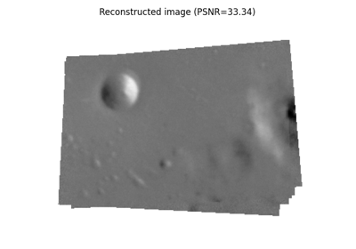
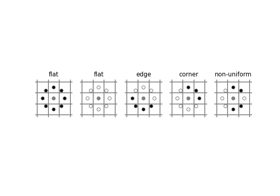
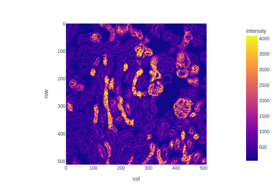
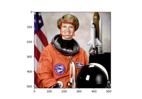

skimage.feature#
Finds blobs in the given grayscale image. |
|
Finds blobs in the given grayscale image. |
|
Finds blobs in the given grayscale image. |
|
Edge filter an image using the Canny algorithm. |
|
Extract FAST corners for a given image. |
|
Compute Foerstner corner measure response image. |
|
Compute Harris corner measure response image. |
|
Compute Kitchen and Rosenfeld corner measure response image. |
|
Compute Moravec corner measure response image. |
|
Compute the orientation of corners. |
|
Find peaks in corner measure response image. |
|
Compute Shi-Tomasi (Kanade-Tomasi) corner measure response image. |
|
Determine subpixel position of corners. |
|
Extract DAISY feature descriptors densely for the given image. |
|
Visualization of Haar-like features. |
|
Multi-block local binary pattern visualization. |
|
Compute the Fisher vector given some descriptors/vectors, and an associated estimated GMM. |
|
Calculate the gray-level co-occurrence matrix. |
|
Calculate texture properties of a GLCM. |
|
Compute the Haar-like features for a region of interest (ROI) of an integral image. |
|
Compute the coordinates of Haar-like features. |
|
Compute the Hessian matrix. |
|
Compute the approximate Hessian Determinant over an image. |
|
Compute eigenvalues of Hessian matrix. |
|
Extract Histogram of Oriented Gradients (HOG) for a given image. |
|
Estimate a Gaussian mixture model (GMM) given a set of descriptors and number of modes (i.e. Gaussians). |
|
Compute the local binary patterns (LBP) of an image. |
|
Brute-force matching of descriptors. |
|
Match a template to a 2-D or 3-D image using normalized correlation. |
|
Multi-block local binary pattern (MB-LBP). |
|
Local features for a single- or multi-channel nd image. |
|
Find peaks in an image as coordinate list. |
|
Plot matched features between two images. |
|
Compute the shape index. |
|
Compute structure tensor using sum of squared differences. |
|
Compute eigenvalues of structure tensor. |
|
BRIEF binary descriptor extractor. |
|
CENSURE keypoint detector. |
|
Class for cascade of classifiers that is used for object detection. |
|
Oriented FAST and rotated BRIEF feature detector and binary descriptor extractor. |
|
SIFT feature detection and descriptor extraction. |
- skimage.feature.blob_dog(image, min_sigma=1, max_sigma=50, sigma_ratio=1.6, threshold=0.5, overlap=0.5, *, threshold_rel=None, exclude_border=False)[source]#
Finds blobs in the given grayscale image.
Blobs are found using the Difference of Gaussian (DoG) method [1], [2]. For each blob found, the method returns its coordinates and the standard deviation of the Gaussian kernel that detected the blob.
- Parameters:
- imagendarray
Input grayscale image, blobs are assumed to be light on dark background (white on black).
- min_sigmascalar or sequence of scalars, optional
The minimum standard deviation for Gaussian kernel. Keep this low to detect smaller blobs. The standard deviations of the Gaussian filter are given for each axis as a sequence, or as a single number, in which case it is equal for all axes.
- max_sigmascalar or sequence of scalars, optional
The maximum standard deviation for Gaussian kernel. Keep this high to detect larger blobs. The standard deviations of the Gaussian filter are given for each axis as a sequence, or as a single number, in which case it is equal for all axes.
- sigma_ratiofloat, optional
The ratio between the standard deviation of Gaussian Kernels used for computing the Difference of Gaussians
- thresholdfloat or None, optional
The absolute lower bound for scale space maxima. Local maxima smaller than
thresholdare ignored. Reduce this to detect blobs with lower intensities. Ifthreshold_relis also specified, whichever threshold is larger will be used. If None,threshold_relis used instead.- overlapfloat, optional
A value between 0 and 1. If the area of two blobs overlaps by a fraction greater than
threshold, the smaller blob is eliminated.- threshold_relfloat or None, optional
Minimum intensity of peaks, calculated as
max(dog_space) * threshold_rel, wheredog_spacerefers to the stack of Difference-of-Gaussian (DoG) images computed internally. This should have a value between 0 and 1. If None,thresholdis used instead.- exclude_bordertuple of ints, int, or False, optional
If tuple of ints, the length of the tuple must match the input array’s dimensionality. Each element of the tuple will exclude peaks from within
exclude_border-pixels of the border of the image along that dimension. If nonzero int,exclude_borderexcludes peaks from withinexclude_border-pixels of the border of the image. If zero or False, peaks are identified regardless of their distance from the border.
- Returns:
- A(n, image.ndim + sigma) ndarray
A 2d array with each row representing 2 coordinate values for a 2D image, or 3 coordinate values for a 3D image, plus the sigma(s) used. When a single sigma is passed, outputs are:
(r, c, sigma)or(p, r, c, sigma)where(r, c)or(p, r, c)are coordinates of the blob andsigmais the standard deviation of the Gaussian kernel which detected the blob. When an anisotropic gaussian is used (sigmas per dimension), the detected sigma is returned for each dimension.
Notes
The radius of each blob is approximately \(\sqrt{2}\sigma\) for a 2-D image and \(\sqrt{3}\sigma\) for a 3-D image.
References
[2]Lowe, D. G. “Distinctive Image Features from Scale-Invariant Keypoints.” International Journal of Computer Vision 60, 91–110 (2004). https://www.cs.ubc.ca/~lowe/papers/ijcv04.pdf DOI:10.1023/B:VISI.0000029664.99615.94
Examples
>>> from skimage import data, feature >>> coins = data.coins() >>> feature.blob_dog(coins, threshold=.05, min_sigma=10, max_sigma=40) array([[128., 155., 10.], [198., 155., 10.], [124., 338., 10.], [127., 102., 10.], [193., 281., 10.], [126., 208., 10.], [267., 115., 10.], [197., 102., 10.], [198., 215., 10.], [123., 279., 10.], [126., 46., 10.], [259., 247., 10.], [196., 43., 10.], [ 54., 276., 10.], [267., 358., 10.], [ 58., 100., 10.], [259., 305., 10.], [185., 347., 16.], [261., 174., 16.], [ 46., 336., 16.], [ 54., 217., 10.], [ 55., 157., 10.], [ 57., 41., 10.], [260., 47., 16.]])

- skimage.feature.blob_doh(image, min_sigma=1, max_sigma=30, num_sigma=10, threshold=0.01, overlap=0.5, log_scale=False, *, threshold_rel=None)[source]#
Finds blobs in the given grayscale image.
Blobs are found using the Determinant of Hessian method [1]. For each blob found, the method returns its coordinates and the standard deviation of the Gaussian Kernel used for the Hessian matrix whose determinant detected the blob. Determinant of Hessians is approximated using [2].
- Parameters:
- image2D ndarray
Input grayscale image.Blobs can either be light on dark or vice versa.
- min_sigmafloat, optional
The minimum standard deviation for Gaussian Kernel used to compute Hessian matrix. Keep this low to detect smaller blobs.
- max_sigmafloat, optional
The maximum standard deviation for Gaussian Kernel used to compute Hessian matrix. Keep this high to detect larger blobs.
- num_sigmaint, optional
The number of intermediate values of standard deviations to consider between
min_sigmaandmax_sigma.- thresholdfloat or None, optional
The absolute lower bound for scale space maxima. Local maxima smaller than
thresholdare ignored. Reduce this to detect blobs with lower intensities. Ifthreshold_relis also specified, whichever threshold is larger will be used. If None,threshold_relis used instead.- overlapfloat, optional
A value between 0 and 1. If the area of two blobs overlaps by a fraction greater than
threshold, the smaller blob is eliminated.- log_scalebool, optional
If set intermediate values of standard deviations are interpolated using a logarithmic scale to the base
10. If not, linear interpolation is used.- threshold_relfloat or None, optional
Minimum intensity of peaks, calculated as
max(doh_space) * threshold_rel, wheredoh_spacerefers to the stack of Determinant-of-Hessian (DoH) images computed internally. This should have a value between 0 and 1. If None,thresholdis used instead.
- Returns:
- A(n, 3) ndarray
A 2d array with each row representing 3 values,
(y,x,sigma)where(y,x)are coordinates of the blob andsigmais the standard deviation of the Gaussian kernel of the Hessian Matrix whose determinant detected the blob.
Notes
The radius of each blob is approximately
sigma. Computation of Determinant of Hessians is independent of the standard deviation. Therefore detecting larger blobs won’t take more time. In methods lineblob_dog()andblob_log()the computation of Gaussians for largersigmatakes more time. The downside is that this method can’t be used for detecting blobs of radius less than3pxdue to the box filters used in the approximation of Hessian Determinant.References
[2]Herbert Bay, Andreas Ess, Tinne Tuytelaars, Luc Van Gool, “SURF: Speeded Up Robust Features” ftp://ftp.vision.ee.ethz.ch/publications/articles/eth_biwi_00517.pdf
Examples
>>> from skimage import data, feature >>> img = data.coins() >>> feature.blob_doh(img) array([[197. , 153. , 20.33333333], [124. , 336. , 20.33333333], [126. , 153. , 20.33333333], [195. , 100. , 23.55555556], [192. , 212. , 23.55555556], [121. , 271. , 30. ], [126. , 101. , 20.33333333], [193. , 275. , 23.55555556], [123. , 205. , 20.33333333], [270. , 363. , 30. ], [265. , 113. , 23.55555556], [262. , 243. , 23.55555556], [185. , 348. , 30. ], [156. , 302. , 30. ], [123. , 44. , 23.55555556], [260. , 173. , 30. ], [197. , 44. , 20.33333333]])
- skimage.feature.blob_log(image, min_sigma=1, max_sigma=50, num_sigma=10, threshold=0.2, overlap=0.5, log_scale=False, *, threshold_rel=None, exclude_border=False)[source]#
Finds blobs in the given grayscale image.
Blobs are found using the Laplacian of Gaussian (LoG) method [1]. For each blob found, the method returns its coordinates and the standard deviation of the Gaussian kernel that detected the blob.
- Parameters:
- imagendarray
Input grayscale image, blobs are assumed to be light on dark background (white on black).
- min_sigmascalar or sequence of scalars, optional
the minimum standard deviation for Gaussian kernel. Keep this low to detect smaller blobs. The standard deviations of the Gaussian filter are given for each axis as a sequence, or as a single number, in which case it is equal for all axes.
- max_sigmascalar or sequence of scalars, optional
The maximum standard deviation for Gaussian kernel. Keep this high to detect larger blobs. The standard deviations of the Gaussian filter are given for each axis as a sequence, or as a single number, in which case it is equal for all axes.
- num_sigmaint, optional
The number of intermediate values of standard deviations to consider between
min_sigmaandmax_sigma.- thresholdfloat or None, optional
The absolute lower bound for scale space maxima. Local maxima smaller than
thresholdare ignored. Reduce this to detect blobs with lower intensities. Ifthreshold_relis also specified, whichever threshold is larger will be used. If None,threshold_relis used instead.- overlapfloat, optional
A value between 0 and 1. If the area of two blobs overlaps by a fraction greater than
threshold, the smaller blob is eliminated.- log_scalebool, optional
If set intermediate values of standard deviations are interpolated using a logarithmic scale to the base
10. If not, linear interpolation is used.- threshold_relfloat or None, optional
Minimum intensity of peaks, calculated as
max(log_space) * threshold_rel, wherelog_spacerefers to the stack of Laplacian-of-Gaussian (LoG) images computed internally. This should have a value between 0 and 1. If None,thresholdis used instead.- exclude_bordertuple of ints, int, or False, optional
If tuple of ints, the length of the tuple must match the input array’s dimensionality. Each element of the tuple will exclude peaks from within
exclude_border-pixels of the border of the image along that dimension. If nonzero int,exclude_borderexcludes peaks from withinexclude_border-pixels of the border of the image. If zero or False, peaks are identified regardless of their distance from the border.
- Returns:
- A(n, image.ndim + sigma) ndarray
A 2d array with each row representing 2 coordinate values for a 2D image, or 3 coordinate values for a 3D image, plus the sigma(s) used. When a single sigma is passed, outputs are:
(r, c, sigma)or(p, r, c, sigma)where(r, c)or(p, r, c)are coordinates of the blob andsigmais the standard deviation of the Gaussian kernel which detected the blob. When an anisotropic gaussian is used (sigmas per dimension), the detected sigma is returned for each dimension.
Notes
The radius of each blob is approximately \(\sqrt{2}\sigma\) for a 2-D image and \(\sqrt{3}\sigma\) for a 3-D image.
References
Examples
>>> from skimage import data, feature, exposure >>> img = data.coins() >>> img = exposure.equalize_hist(img) # improves detection >>> feature.blob_log(img, threshold = .3) array([[124. , 336. , 11.88888889], [198. , 155. , 11.88888889], [194. , 213. , 17.33333333], [121. , 272. , 17.33333333], [263. , 244. , 17.33333333], [194. , 276. , 17.33333333], [266. , 115. , 11.88888889], [128. , 154. , 11.88888889], [260. , 174. , 17.33333333], [198. , 103. , 11.88888889], [126. , 208. , 11.88888889], [127. , 102. , 11.88888889], [263. , 302. , 17.33333333], [197. , 44. , 11.88888889], [185. , 344. , 17.33333333], [126. , 46. , 11.88888889], [113. , 323. , 1. ]])
- skimage.feature.canny(image, sigma=1.0, low_threshold=None, high_threshold=None, mask=None, use_quantiles=False, *, mode='constant', cval=0.0)[source]#
Edge filter an image using the Canny algorithm.
- Parameters:
- image2D array
Grayscale input image to detect edges on; can be of any dtype.
- sigmafloat, optional
Standard deviation of the Gaussian filter.
- low_thresholdfloat, optional
Lower bound for hysteresis thresholding (linking edges). If None, low_threshold is set to 10% of dtype’s max.
- high_thresholdfloat, optional
Upper bound for hysteresis thresholding (linking edges). If None, high_threshold is set to 20% of dtype’s max.
- maskarray, dtype=bool, optional
Mask to limit the application of Canny to a certain area.
- use_quantilesbool, optional
If
Truethen treat low_threshold and high_threshold as quantiles of the edge magnitude image, rather than absolute edge magnitude values. IfTruethen the thresholds must be in the range [0, 1].- modestr, {‘reflect’, ‘constant’, ‘nearest’, ‘mirror’, ‘wrap’}
The
modeparameter determines how the array borders are handled during Gaussian filtering, wherecvalis the value when mode is equal to ‘constant’.- cvalfloat, optional
Value to fill past edges of input if
modeis ‘constant’.
- Returns:
- output2D array (image)
The binary edge map.
See also
Notes
The steps of the algorithm are as follows:
Smooth the image using a Gaussian with
sigmawidth.Apply the horizontal and vertical Sobel operators to get the gradients within the image. The edge strength is the norm of the gradient.
Thin potential edges to 1-pixel wide curves. First, find the normal to the edge at each point. This is done by looking at the signs and the relative magnitude of the X-Sobel and Y-Sobel to sort the points into 4 categories: horizontal, vertical, diagonal and antidiagonal. Then look in the normal and reverse directions to see if the values in either of those directions are greater than the point in question. Use interpolation to get a mix of points instead of picking the one that’s the closest to the normal.
Perform a hysteresis thresholding: first label all points above the high threshold as edges. Then recursively label any point above the low threshold that is 8-connected to a labeled point as an edge.
References
[1]Canny, J., A Computational Approach To Edge Detection, IEEE Trans. Pattern Analysis and Machine Intelligence, 8:679-714, 1986 DOI:10.1109/TPAMI.1986.4767851
[2]William Green’s Canny tutorial https://en.wikipedia.org/wiki/Canny_edge_detector
Examples
>>> from skimage import feature >>> rng = np.random.default_rng() >>> # Generate noisy image of a square >>> im = np.zeros((256, 256)) >>> im[64:-64, 64:-64] = 1 >>> im += 0.2 * rng.random(im.shape) >>> # First trial with the Canny filter, with the default smoothing >>> edges1 = feature.canny(im) >>> # Increase the smoothing for better results >>> edges2 = feature.canny(im, sigma=3)

Comparing edge-based and region-based segmentation
Comparing edge-based and region-based segmentation


- skimage.feature.corner_fast(image, n=12, threshold=0.15)[source]#
Extract FAST corners for a given image.
- Parameters:
- image(M, N) ndarray
Input image.
- nint, optional
Minimum number of consecutive pixels out of 16 pixels on the circle that should all be either brighter or darker w.r.t testpixel. A point c on the circle is darker w.r.t test pixel p if
Ic < Ip - thresholdand brighter ifIc > Ip + threshold. Also stands for the n inFAST-ncorner detector.- thresholdfloat, optional
Threshold used in deciding whether the pixels on the circle are brighter, darker or similar w.r.t. the test pixel. Decrease the threshold when more corners are desired and vice-versa.
- Returns:
- responsendarray
FAST corner response image.
References
[1]Rosten, E., & Drummond, T. (2006, May). Machine learning for high-speed corner detection. In European conference on computer vision (pp. 430-443). Springer, Berlin, Heidelberg. DOI:10.1007/11744023_34 http://www.edwardrosten.com/work/rosten_2006_machine.pdf
[2]Wikipedia, “Features from accelerated segment test”, https://en.wikipedia.org/wiki/Features_from_accelerated_segment_test
Examples
>>> from skimage.feature import corner_fast, corner_peaks >>> square = np.zeros((12, 12)) >>> square[3:9, 3:9] = 1 >>> square.astype(int) array([[0, 0, 0, 0, 0, 0, 0, 0, 0, 0, 0, 0], [0, 0, 0, 0, 0, 0, 0, 0, 0, 0, 0, 0], [0, 0, 0, 0, 0, 0, 0, 0, 0, 0, 0, 0], [0, 0, 0, 1, 1, 1, 1, 1, 1, 0, 0, 0], [0, 0, 0, 1, 1, 1, 1, 1, 1, 0, 0, 0], [0, 0, 0, 1, 1, 1, 1, 1, 1, 0, 0, 0], [0, 0, 0, 1, 1, 1, 1, 1, 1, 0, 0, 0], [0, 0, 0, 1, 1, 1, 1, 1, 1, 0, 0, 0], [0, 0, 0, 1, 1, 1, 1, 1, 1, 0, 0, 0], [0, 0, 0, 0, 0, 0, 0, 0, 0, 0, 0, 0], [0, 0, 0, 0, 0, 0, 0, 0, 0, 0, 0, 0], [0, 0, 0, 0, 0, 0, 0, 0, 0, 0, 0, 0]]) >>> corner_peaks(corner_fast(square, 9), min_distance=1) array([[3, 3], [3, 8], [8, 3], [8, 8]])
- skimage.feature.corner_foerstner(image, sigma=1)[source]#
Compute Foerstner corner measure response image.
This corner detector uses information from the auto-correlation matrix A:
A = [(imx**2) (imx*imy)] = [Axx Axy] [(imx*imy) (imy**2)] [Axy Ayy]
Where imx and imy are first derivatives, averaged with a gaussian filter. The corner measure is then defined as:
w = det(A) / trace(A) (size of error ellipse) q = 4 * det(A) / trace(A)**2 (roundness of error ellipse)
- Parameters:
- image(M, N) ndarray
Input image.
- sigmafloat, optional
Standard deviation used for the Gaussian kernel, which is used as weighting function for the auto-correlation matrix.
- Returns:
- wndarray
Error ellipse sizes.
- qndarray
Roundness of error ellipse.
References
[1]Förstner, W., & Gülch, E. (1987, June). A fast operator for detection and precise location of distinct points, corners and centres of circular features. In Proc. ISPRS intercommission conference on fast processing of photogrammetric data (pp. 281-305). https://cseweb.ucsd.edu/classes/sp02/cse252/foerstner/foerstner.pdf
Examples
>>> from skimage.feature import corner_foerstner, corner_peaks >>> square = np.zeros([10, 10]) >>> square[2:8, 2:8] = 1 >>> square.astype(int) array([[0, 0, 0, 0, 0, 0, 0, 0, 0, 0], [0, 0, 0, 0, 0, 0, 0, 0, 0, 0], [0, 0, 1, 1, 1, 1, 1, 1, 0, 0], [0, 0, 1, 1, 1, 1, 1, 1, 0, 0], [0, 0, 1, 1, 1, 1, 1, 1, 0, 0], [0, 0, 1, 1, 1, 1, 1, 1, 0, 0], [0, 0, 1, 1, 1, 1, 1, 1, 0, 0], [0, 0, 1, 1, 1, 1, 1, 1, 0, 0], [0, 0, 0, 0, 0, 0, 0, 0, 0, 0], [0, 0, 0, 0, 0, 0, 0, 0, 0, 0]]) >>> w, q = corner_foerstner(square) >>> accuracy_thresh = 0.5 >>> roundness_thresh = 0.3 >>> foerstner = (q > roundness_thresh) * (w > accuracy_thresh) * w >>> corner_peaks(foerstner, min_distance=1) array([[2, 2], [2, 7], [7, 2], [7, 7]])
- skimage.feature.corner_harris(image, method='k', k=0.05, eps=1e-06, sigma=1)[source]#
Compute Harris corner measure response image.
This corner detector uses information from the auto-correlation matrix A:
A = [(imx**2) (imx*imy)] = [Axx Axy] [(imx*imy) (imy**2)] [Axy Ayy]
Where imx and imy are first derivatives, averaged with a gaussian filter. The corner measure is then defined as:
det(A) - k * trace(A)**2
or:
2 * det(A) / (trace(A) + eps)
- Parameters:
- image(M, N) ndarray
Input image.
- method{‘k’, ‘eps’}, optional
Method to compute the response image from the auto-correlation matrix.
- kfloat, optional
Sensitivity factor to separate corners from edges, typically in range
[0, 0.2]. Small values of k result in detection of sharp corners.- epsfloat, optional
Normalisation factor (Noble’s corner measure).
- sigmafloat, optional
Standard deviation used for the Gaussian kernel, which is used as weighting function for the auto-correlation matrix.
- Returns:
- responsendarray
Harris response image.
References
Examples
>>> from skimage.feature import corner_harris, corner_peaks >>> square = np.zeros([10, 10]) >>> square[2:8, 2:8] = 1 >>> square.astype(int) array([[0, 0, 0, 0, 0, 0, 0, 0, 0, 0], [0, 0, 0, 0, 0, 0, 0, 0, 0, 0], [0, 0, 1, 1, 1, 1, 1, 1, 0, 0], [0, 0, 1, 1, 1, 1, 1, 1, 0, 0], [0, 0, 1, 1, 1, 1, 1, 1, 0, 0], [0, 0, 1, 1, 1, 1, 1, 1, 0, 0], [0, 0, 1, 1, 1, 1, 1, 1, 0, 0], [0, 0, 1, 1, 1, 1, 1, 1, 0, 0], [0, 0, 0, 0, 0, 0, 0, 0, 0, 0], [0, 0, 0, 0, 0, 0, 0, 0, 0, 0]]) >>> corner_peaks(corner_harris(square), min_distance=1) array([[2, 2], [2, 7], [7, 2], [7, 7]])
Assemble images with simple image stitching
Assemble images with simple image stitching


- skimage.feature.corner_kitchen_rosenfeld(image, mode='constant', cval=0)[source]#
Compute Kitchen and Rosenfeld corner measure response image.
The corner measure is calculated as follows:
(imxx * imy**2 + imyy * imx**2 - 2 * imxy * imx * imy) / (imx**2 + imy**2)
Where imx and imy are the first and imxx, imxy, imyy the second derivatives.
- Parameters:
- image(M, N) ndarray
Input image.
- mode{‘constant’, ‘reflect’, ‘wrap’, ‘nearest’, ‘mirror’}, optional
How to handle values outside the image borders.
- cvalfloat, optional
Used in conjunction with mode ‘constant’, the value outside the image boundaries.
- Returns:
- responsendarray
Kitchen and Rosenfeld response image.
References
[1]Kitchen, L., & Rosenfeld, A. (1982). Gray-level corner detection. Pattern recognition letters, 1(2), 95-102. DOI:10.1016/0167-8655(82)90020-4
- skimage.feature.corner_moravec(image, window_size=1)[source]#
Compute Moravec corner measure response image.
This is one of the simplest corner detectors and is comparatively fast but has several limitations (e.g. not rotation invariant).
- Parameters:
- image(M, N) ndarray
Input image.
- window_sizeint, optional
Window size.
- Returns:
- responsendarray
Moravec response image.
References
Examples
>>> from skimage.feature import corner_moravec >>> square = np.zeros([7, 7]) >>> square[3, 3] = 1 >>> square.astype(int) array([[0, 0, 0, 0, 0, 0, 0], [0, 0, 0, 0, 0, 0, 0], [0, 0, 0, 0, 0, 0, 0], [0, 0, 0, 1, 0, 0, 0], [0, 0, 0, 0, 0, 0, 0], [0, 0, 0, 0, 0, 0, 0], [0, 0, 0, 0, 0, 0, 0]]) >>> corner_moravec(square).astype(int) array([[0, 0, 0, 0, 0, 0, 0], [0, 0, 0, 0, 0, 0, 0], [0, 0, 1, 1, 1, 0, 0], [0, 0, 1, 2, 1, 0, 0], [0, 0, 1, 1, 1, 0, 0], [0, 0, 0, 0, 0, 0, 0], [0, 0, 0, 0, 0, 0, 0]])
- skimage.feature.corner_orientations(image, corners, mask)[source]#
Compute the orientation of corners.
The orientation of corners is computed using the first order central moment i.e. the center of mass approach. The corner orientation is the angle of the vector from the corner coordinate to the intensity centroid in the local neighborhood around the corner calculated using first order central moment.
- Parameters:
- image(M, N) array
Input grayscale image.
- corners(K, 2) array
Corner coordinates as
(row, col).- mask2D array
Mask defining the local neighborhood of the corner used for the calculation of the central moment.
- Returns:
- orientations(K, 1) array
Orientations of corners in the range [-pi, pi].
References
[1]Ethan Rublee, Vincent Rabaud, Kurt Konolige and Gary Bradski “ORB : An efficient alternative to SIFT and SURF” http://www.vision.cs.chubu.ac.jp/CV-R/pdf/Rublee_iccv2011.pdf
[2]Paul L. Rosin, “Measuring Corner Properties” http://users.cs.cf.ac.uk/Paul.Rosin/corner2.pdf
Examples
>>> from skimage.morphology import octagon >>> from skimage.feature import (corner_fast, corner_peaks, ... corner_orientations) >>> square = np.zeros((12, 12)) >>> square[3:9, 3:9] = 1 >>> square.astype(int) array([[0, 0, 0, 0, 0, 0, 0, 0, 0, 0, 0, 0], [0, 0, 0, 0, 0, 0, 0, 0, 0, 0, 0, 0], [0, 0, 0, 0, 0, 0, 0, 0, 0, 0, 0, 0], [0, 0, 0, 1, 1, 1, 1, 1, 1, 0, 0, 0], [0, 0, 0, 1, 1, 1, 1, 1, 1, 0, 0, 0], [0, 0, 0, 1, 1, 1, 1, 1, 1, 0, 0, 0], [0, 0, 0, 1, 1, 1, 1, 1, 1, 0, 0, 0], [0, 0, 0, 1, 1, 1, 1, 1, 1, 0, 0, 0], [0, 0, 0, 1, 1, 1, 1, 1, 1, 0, 0, 0], [0, 0, 0, 0, 0, 0, 0, 0, 0, 0, 0, 0], [0, 0, 0, 0, 0, 0, 0, 0, 0, 0, 0, 0], [0, 0, 0, 0, 0, 0, 0, 0, 0, 0, 0, 0]]) >>> corners = corner_peaks(corner_fast(square, 9), min_distance=1) >>> corners array([[3, 3], [3, 8], [8, 3], [8, 8]]) >>> orientations = corner_orientations(square, corners, octagon(3, 2)) >>> np.rad2deg(orientations) array([ 45., 135., -45., -135.])
- skimage.feature.corner_peaks(image, min_distance=1, threshold_abs=None, threshold_rel=None, exclude_border=True, indices=True, num_peaks=inf, footprint=None, labels=None, *, num_peaks_per_label=inf, p_norm=inf)[source]#
Find peaks in corner measure response image.
This differs from
skimage.feature.peak_local_maxin that it suppresses multiple connected peaks with the same accumulator value.- Parameters:
- image(M, N) ndarray
Input image.
- min_distanceint, optional
The minimal allowed distance separating peaks.
- **
- p_normfloat
Which Minkowski p-norm to use. Should be in the range [1, inf]. A finite large p may cause a ValueError if overflow can occur.
infcorresponds to the Chebyshev distance and 2 to the Euclidean distance.
- Returns:
- outputndarray or ndarray of bools
If
indices = True: (row, column, …) coordinates of peaks.If
indices = False: Boolean array shaped likeimage, with peaks represented by True values.
See also
Notes
Changed in version 0.18: The default value of
threshold_relhas changed to None, which corresponds to lettingskimage.feature.peak_local_maxdecide on the default. This is equivalent tothreshold_rel=0.The
num_peakslimit is applied before suppression of connected peaks. To limit the number of peaks after suppression, setnum_peaks=np.infand post-process the output of this function.Examples
>>> from skimage.feature import peak_local_max >>> response = np.zeros((5, 5)) >>> response[2:4, 2:4] = 1 >>> response array([[0., 0., 0., 0., 0.], [0., 0., 0., 0., 0.], [0., 0., 1., 1., 0.], [0., 0., 1., 1., 0.], [0., 0., 0., 0., 0.]]) >>> peak_local_max(response) array([[2, 2], [2, 3], [3, 2], [3, 3]]) >>> corner_peaks(response) array([[2, 2]])
Assemble images with simple image stitching
Assemble images with simple image stitching
- skimage.feature.corner_shi_tomasi(image, sigma=1)[source]#
Compute Shi-Tomasi (Kanade-Tomasi) corner measure response image.
This corner detector uses information from the auto-correlation matrix A:
A = [(imx**2) (imx*imy)] = [Axx Axy] [(imx*imy) (imy**2)] [Axy Ayy]
Where imx and imy are first derivatives, averaged with a gaussian filter. The corner measure is then defined as the smaller eigenvalue of A:
((Axx + Ayy) - sqrt((Axx - Ayy)**2 + 4 * Axy**2)) / 2
- Parameters:
- image(M, N) ndarray
Input image.
- sigmafloat, optional
Standard deviation used for the Gaussian kernel, which is used as weighting function for the auto-correlation matrix.
- Returns:
- responsendarray
Shi-Tomasi response image.
References
Examples
>>> from skimage.feature import corner_shi_tomasi, corner_peaks >>> square = np.zeros([10, 10]) >>> square[2:8, 2:8] = 1 >>> square.astype(int) array([[0, 0, 0, 0, 0, 0, 0, 0, 0, 0], [0, 0, 0, 0, 0, 0, 0, 0, 0, 0], [0, 0, 1, 1, 1, 1, 1, 1, 0, 0], [0, 0, 1, 1, 1, 1, 1, 1, 0, 0], [0, 0, 1, 1, 1, 1, 1, 1, 0, 0], [0, 0, 1, 1, 1, 1, 1, 1, 0, 0], [0, 0, 1, 1, 1, 1, 1, 1, 0, 0], [0, 0, 1, 1, 1, 1, 1, 1, 0, 0], [0, 0, 0, 0, 0, 0, 0, 0, 0, 0], [0, 0, 0, 0, 0, 0, 0, 0, 0, 0]]) >>> corner_peaks(corner_shi_tomasi(square), min_distance=1) array([[2, 2], [2, 7], [7, 2], [7, 7]])
- skimage.feature.corner_subpix(image, corners, window_size=11, alpha=0.99)[source]#
Determine subpixel position of corners.
A statistical test decides whether the corner is defined as the intersection of two edges or a single peak. Depending on the classification result, the subpixel corner location is determined based on the local covariance of the grey-values. If the significance level for either statistical test is not sufficient, the corner cannot be classified, and the output subpixel position is set to NaN.
- Parameters:
- image(M, N) ndarray
Input image.
- corners(K, 2) ndarray
Corner coordinates
(row, col).- window_sizeint, optional
Search window size for subpixel estimation.
- alphafloat, optional
Significance level for corner classification.
- Returns:
- positions(K, 2) ndarray
Subpixel corner positions. NaN for “not classified” corners.
References
[1]Förstner, W., & Gülch, E. (1987, June). A fast operator for detection and precise location of distinct points, corners and centres of circular features. In Proc. ISPRS intercommission conference on fast processing of photogrammetric data (pp. 281-305). https://cseweb.ucsd.edu/classes/sp02/cse252/foerstner/foerstner.pdf
Examples
>>> from skimage.feature import corner_harris, corner_peaks, corner_subpix >>> img = np.zeros((10, 10)) >>> img[:5, :5] = 1 >>> img[5:, 5:] = 1 >>> img.astype(int) array([[1, 1, 1, 1, 1, 0, 0, 0, 0, 0], [1, 1, 1, 1, 1, 0, 0, 0, 0, 0], [1, 1, 1, 1, 1, 0, 0, 0, 0, 0], [1, 1, 1, 1, 1, 0, 0, 0, 0, 0], [1, 1, 1, 1, 1, 0, 0, 0, 0, 0], [0, 0, 0, 0, 0, 1, 1, 1, 1, 1], [0, 0, 0, 0, 0, 1, 1, 1, 1, 1], [0, 0, 0, 0, 0, 1, 1, 1, 1, 1], [0, 0, 0, 0, 0, 1, 1, 1, 1, 1], [0, 0, 0, 0, 0, 1, 1, 1, 1, 1]]) >>> coords = corner_peaks(corner_harris(img), min_distance=2) >>> coords_subpix = corner_subpix(img, coords, window_size=7) >>> coords_subpix array([[4.5, 4.5]])
- skimage.feature.daisy(image, step=4, radius=15, rings=3, histograms=8, orientations=8, normalization='l1', sigmas=None, ring_radii=None, visualize=False)[source]#
Extract DAISY feature descriptors densely for the given image.
DAISY is a feature descriptor similar to SIFT formulated in a way that allows for fast dense extraction. Typically, this is practical for bag-of-features image representations.
The implementation follows Tola et al. [1] but deviate on the following points:
Histogram bin contribution are smoothed with a circular Gaussian window over the tonal range (the angular range).
The sigma values of the spatial Gaussian smoothing in this code do not match the sigma values in the original code by Tola et al. [2]. In their code, spatial smoothing is applied to both the input image and the center histogram. However, this smoothing is not documented in [1] and, therefore, it is omitted.
- Parameters:
- image(M, N) array
Input image (grayscale).
- stepint, optional
Distance between descriptor sampling points.
- radiusint, optional
Radius (in pixels) of the outermost ring.
- ringsint, optional
Number of rings.
- histogramsint, optional
Number of histograms sampled per ring.
- orientationsint, optional
Number of orientations (bins) per histogram.
- normalization[ ‘l1’ | ‘l2’ | ‘daisy’ | ‘off’ ], optional
How to normalize the descriptors
‘l1’: L1-normalization of each descriptor.
‘l2’: L2-normalization of each descriptor.
‘daisy’: L2-normalization of individual histograms.
‘off’: Disable normalization.
- sigmas1D array of float, optional
Standard deviation of spatial Gaussian smoothing for the center histogram and for each ring of histograms. The array of sigmas should be sorted from the center and out. I.e. the first sigma value defines the spatial smoothing of the center histogram and the last sigma value defines the spatial smoothing of the outermost ring. Specifying sigmas overrides the following parameter.
rings = len(sigmas) - 1- ring_radii1D array of int, optional
Radius (in pixels) for each ring. Specifying ring_radii overrides the following two parameters.
rings = len(ring_radii)radius = ring_radii[-1]If both sigmas and ring_radii are given, they must satisfy the following predicate since no radius is needed for the center histogram.
len(ring_radii) == len(sigmas) + 1- visualizebool, optional
Generate a visualization of the DAISY descriptors
- Returns:
- descsarray
Grid of DAISY descriptors for the given image as an array dimensionality (P, Q, R) where
P = ceil((M - radius*2) / step)Q = ceil((N - radius*2) / step)R = (rings * histograms + 1) * orientations- descs_img(M, N, 3) array (only if visualize==True)
Visualization of the DAISY descriptors.
References

- skimage.feature.draw_haar_like_feature(image, r, c, width, height, feature_coord, color_positive_block=(1.0, 0.0, 0.0), color_negative_block=(0.0, 1.0, 0.0), alpha=0.5, max_n_features=None, rng=None)[source]#
Visualization of Haar-like features.
- Parameters:
- image(M, N) ndarray
The region of an integral image for which the features need to be computed.
- rint
Row-coordinate of top left corner of the detection window.
- cint
Column-coordinate of top left corner of the detection window.
- widthint
Width of the detection window.
- heightint
Height of the detection window.
- feature_coordndarray of list of tuples or None, optional
The array of coordinates to be extracted. This is useful when you want to recompute only a subset of features. In this case
feature_typeneeds to be an array containing the type of each feature, as returned byhaar_like_feature_coord(). By default, all coordinates are computed.- color_positive_blocktuple of 3 floats
Floats specifying the color for the positive block. Corresponding values define (R, G, B) values. Default value is red (1, 0, 0).
- color_negative_blocktuple of 3 floats
Floats specifying the color for the negative block Corresponding values define (R, G, B) values. Default value is blue (0, 1, 0).
- alphafloat
Value in the range [0, 1] that specifies opacity of visualization. 1 - fully transparent, 0 - opaque.
- max_n_featuresint, default=None
The maximum number of features to be returned. By default, all features are returned.
- rng{
numpy.random.Generator, int}, optional Pseudo-random number generator. By default, a PCG64 generator is used (see
numpy.random.default_rng()). Ifrngis an int, it is used to seed the generator.The rng is used when generating a set of features smaller than the total number of available features.
- Returns:
- features(M, N), ndarray
An image in which the different features will be added.
Examples
>>> import numpy as np >>> from skimage.feature import haar_like_feature_coord >>> from skimage.feature import draw_haar_like_feature >>> feature_coord, _ = haar_like_feature_coord(2, 2, 'type-4') >>> image = draw_haar_like_feature(np.zeros((2, 2)), ... 0, 0, 2, 2, ... feature_coord, ... max_n_features=1) >>> image array([[[0. , 0.5, 0. ], [0.5, 0. , 0. ]], [[0.5, 0. , 0. ], [0. , 0.5, 0. ]]])

Face classification using Haar-like feature descriptor
Face classification using Haar-like feature descriptor

- skimage.feature.draw_multiblock_lbp(image, r, c, width, height, lbp_code=0, color_greater_block=(1, 1, 1), color_less_block=(0, 0.69, 0.96), alpha=0.5)[source]#
Multi-block local binary pattern visualization.
Blocks with higher sums are colored with alpha-blended white rectangles, whereas blocks with lower sums are colored alpha-blended cyan. Colors and the
alphaparameter can be changed.- Parameters:
- imagendarray of float or uint
Image on which to visualize the pattern.
- rint
Row-coordinate of top left corner of a rectangle containing feature.
- cint
Column-coordinate of top left corner of a rectangle containing feature.
- widthint
Width of one of 9 equal rectangles that will be used to compute a feature.
- heightint
Height of one of 9 equal rectangles that will be used to compute a feature.
- lbp_codeint
The descriptor of feature to visualize. If not provided, the descriptor with 0 value will be used.
- color_greater_blocktuple of 3 floats
Floats specifying the color for the block that has greater intensity value. They should be in the range [0, 1]. Corresponding values define (R, G, B) values. Default value is white (1, 1, 1).
- color_greater_blocktuple of 3 floats
Floats specifying the color for the block that has greater intensity value. They should be in the range [0, 1]. Corresponding values define (R, G, B) values. Default value is cyan (0, 0.69, 0.96).
- alphafloat
Value in the range [0, 1] that specifies opacity of visualization. 1 - fully transparent, 0 - opaque.
- Returns:
- outputndarray of float
Image with MB-LBP visualization.
References
[1]L. Zhang, R. Chu, S. Xiang, S. Liao, S.Z. Li. “Face Detection Based on Multi-Block LBP Representation”, In Proceedings: Advances in Biometrics, International Conference, ICB 2007, Seoul, Korea. http://www.cbsr.ia.ac.cn/users/scliao/papers/Zhang-ICB07-MBLBP.pdf DOI:10.1007/978-3-540-74549-5_2

Multi-Block Local Binary Pattern for texture classification
Multi-Block Local Binary Pattern for texture classification
- skimage.feature.fisher_vector(descriptors, gmm, *, improved=False, alpha=0.5)[source]#
Compute the Fisher vector given some descriptors/vectors, and an associated estimated GMM.
- Parameters:
- descriptorsnp.ndarray, shape=(n_descriptors, descriptor_length)
NumPy array of the descriptors for which the Fisher vector representation is to be computed.
- gmm
sklearn.mixture.GaussianMixture An estimated GMM object, which contains the necessary parameters needed to compute the Fisher vector.
- improvedbool, default=False
Flag denoting whether to compute improved Fisher vectors or not. Improved Fisher vectors are L2 and power normalized. Power normalization is simply f(z) = sign(z) pow(abs(z), alpha) for some 0 <= alpha <= 1.
- alphafloat, default=0.5
The parameter for the power normalization step. Ignored if improved=False.
- Returns:
- fisher_vectornp.ndarray
The computation Fisher vector, which is given by a concatenation of the gradients of a GMM with respect to its parameters (mixture weights, means, and covariance matrices). For D-dimensional input descriptors or vectors, and a K-mode GMM, the Fisher vector dimensionality will be 2KD + K. Thus, its dimensionality is invariant to the number of descriptors/vectors.
References
[1]Perronnin, F. and Dance, C. Fisher kernels on Visual Vocabularies for Image Categorization, IEEE Conference on Computer Vision and Pattern Recognition, 2007
[2]Perronnin, F. and Sanchez, J. and Mensink T. Improving the Fisher Kernel for Large-Scale Image Classification, ECCV, 2010
Examples
>>> from skimage.feature import fisher_vector, learn_gmm >>> sift_for_images = [np.random.random((10, 128)) for _ in range(10)] >>> num_modes = 16 >>> # Estimate 16-mode GMM with these synthetic SIFT vectors >>> gmm = learn_gmm(sift_for_images, n_modes=num_modes) >>> test_image_descriptors = np.random.random((25, 128)) >>> # Compute the Fisher vector >>> fv = fisher_vector(test_image_descriptors, gmm)

- skimage.feature.graycomatrix(image, distances, angles, levels=None, symmetric=False, normed=False)[source]#
Calculate the gray-level co-occurrence matrix.
A gray level co-occurrence matrix is a histogram of co-occurring grayscale values at a given offset over an image.
Changed in version 0.19:
greymatrixwas renamed tograymatrixin 0.19.- Parameters:
- imagearray_like
Integer typed input image. Only positive valued images are supported. If type is other than uint8, the argument
levelsneeds to be set.- distancesarray_like
List of pixel pair distance offsets.
- anglesarray_like
List of pixel pair angles in radians.
- levelsint, optional
The input image should contain integers in [0,
levels-1], where levels indicate the number of gray-levels counted (typically 256 for an 8-bit image). This argument is required for 16-bit images or higher and is typically the maximum of the image. As the output matrix is at leastlevelsxlevels, it might be preferable to use binning of the input image rather than large values forlevels.- symmetricbool, optional
If True, the output matrix
P[:, :, d, theta]is symmetric. This is accomplished by ignoring the order of value pairs, so both (i, j) and (j, i) are accumulated when (i, j) is encountered for a given offset. The default is False.- normedbool, optional
If True, normalize each matrix
P[:, :, d, theta]by dividing by the total number of accumulated co-occurrences for the given offset. The elements of the resulting matrix sum to 1. The default is False.
- Returns:
- P4-D ndarray
The gray-level co-occurrence histogram. The value
P[i,j,d,theta]is the number of times that gray-leveljoccurs at a distancedand at an anglethetafrom gray-leveli. IfnormedisFalse, the output is of type uint32, otherwise it is float64. The dimensions are: levels x levels x number of distances x number of angles.
References
[1]M. Hall-Beyer, 2007. GLCM Texture: A Tutorial https://prism.ucalgary.ca/handle/1880/51900 DOI:
10.11575/PRISM/33280[2]R.M. Haralick, K. Shanmugam, and I. Dinstein, “Textural features for image classification”, IEEE Transactions on Systems, Man, and Cybernetics, vol. SMC-3, no. 6, pp. 610-621, Nov. 1973. DOI:10.1109/TSMC.1973.4309314
[3]M. Nadler and E.P. Smith, Pattern Recognition Engineering, Wiley-Interscience, 1993.
[4]Wikipedia, https://en.wikipedia.org/wiki/Co-occurrence_matrix
Examples
Compute 4 GLCMs using 1-pixel distance and 4 different angles. For example, an angle of 0 radians refers to the neighboring pixel to the right; pi/4 radians to the top-right diagonal neighbor; pi/2 radians to the pixel above, and so forth.
>>> image = np.array([[0, 0, 1, 1], ... [0, 0, 1, 1], ... [0, 2, 2, 2], ... [2, 2, 3, 3]], dtype=np.uint8) >>> result = graycomatrix(image, [1], [0, np.pi/4, np.pi/2, 3*np.pi/4], ... levels=4) >>> result[:, :, 0, 0] array([[2, 2, 1, 0], [0, 2, 0, 0], [0, 0, 3, 1], [0, 0, 0, 1]], dtype=uint32) >>> result[:, :, 0, 1] array([[1, 1, 3, 0], [0, 1, 1, 0], [0, 0, 0, 2], [0, 0, 0, 0]], dtype=uint32) >>> result[:, :, 0, 2] array([[3, 0, 2, 0], [0, 2, 2, 0], [0, 0, 1, 2], [0, 0, 0, 0]], dtype=uint32) >>> result[:, :, 0, 3] array([[2, 0, 0, 0], [1, 1, 2, 0], [0, 0, 2, 1], [0, 0, 0, 0]], dtype=uint32)

- skimage.feature.graycoprops(P, prop='contrast')[source]#
Calculate texture properties of a GLCM.
Compute a feature of a gray level co-occurrence matrix to serve as a compact summary of the matrix. The properties are computed as follows:
‘contrast’: \(\sum_{i,j=0}^{levels-1} P_{i,j}(i-j)^2\)
‘dissimilarity’: \(\sum_{i,j=0}^{levels-1}P_{i,j}|i-j|\)
‘homogeneity’: \(\sum_{i,j=0}^{levels-1}\frac{P_{i,j}}{1+(i-j)^2}\)
‘ASM’: \(\sum_{i,j=0}^{levels-1} P_{i,j}^2\)
‘energy’: \(\sqrt{ASM}\)
- ‘correlation’:
- \[\sum_{i,j=0}^{levels-1} P_{i,j}\left[\frac{(i-\mu_i) \ (j-\mu_j)}{\sqrt{(\sigma_i^2)(\sigma_j^2)}}\right]\]
‘mean’: \(\sum_{i=0}^{levels-1} i*P_{i}\)
‘variance’: \(\sum_{i=0}^{levels-1} P_{i}*(i-mean)^2\)
‘std’: \(\sqrt{variance}\)
‘entropy’: \(\sum_{i,j=0}^{levels-1} -P_{i,j}*log(P_{i,j})\)
Each GLCM is normalized to have a sum of 1 before the computation of texture properties.
Changed in version 0.19:
greycopropswas renamed tograycopropsin 0.19.- Parameters:
- Pndarray
Input array.
Pis the gray-level co-occurrence histogram for which to compute the specified property. The valueP[i,j,d,theta]is the number of times that gray-level j occurs at a distance d and at an angle theta from gray-level i.- prop{‘contrast’, ‘dissimilarity’, ‘homogeneity’, ‘energy’, ‘correlation’, ‘ASM’, ‘mean’, ‘variance’, ‘std’, ‘entropy’}, optional
The property of the GLCM to compute. The default is ‘contrast’.
- Returns:
- results2-D ndarray
2-dimensional array.
results[d, a]is the property ‘prop’ for the d’th distance and the a’th angle.
References
[1]M. Hall-Beyer, 2007. GLCM Texture: A Tutorial v. 1.0 through 3.0. The GLCM Tutorial Home Page, https://prism.ucalgary.ca/handle/1880/51900 DOI:
10.11575/PRISM/33280Examples
Compute the contrast for GLCMs with distances [1, 2] and angles [0 degrees, 90 degrees]
>>> image = np.array([[0, 0, 1, 1], ... [0, 0, 1, 1], ... [0, 2, 2, 2], ... [2, 2, 3, 3]], dtype=np.uint8) >>> g = graycomatrix(image, [1, 2], [0, np.pi/2], levels=4, ... normed=True, symmetric=True) >>> contrast = graycoprops(g, 'contrast') >>> contrast array([[0.58333333, 1. ], [1.25 , 2.75 ]])
- skimage.feature.haar_like_feature(int_image, r, c, width, height, feature_type=None, feature_coord=None)[source]#
Compute the Haar-like features for a region of interest (ROI) of an integral image.
Haar-like features have been successfully used for image classification and object detection [1]. It has been used for real-time face detection algorithm proposed in [2].
- Parameters:
- int_image(M, N) ndarray
Integral image for which the features need to be computed.
- rint
Row-coordinate of top left corner of the detection window.
- cint
Column-coordinate of top left corner of the detection window.
- widthint
Width of the detection window.
- heightint
Height of the detection window.
- feature_typestr or list of str or None, optional
The type of feature to consider:
‘type-2-x’: 2 rectangles varying along the x axis;
‘type-2-y’: 2 rectangles varying along the y axis;
‘type-3-x’: 3 rectangles varying along the x axis;
‘type-3-y’: 3 rectangles varying along the y axis;
‘type-4’: 4 rectangles varying along x and y axis.
By default all features are extracted.
If using with
feature_coord, it should correspond to the feature type of each associated coordinate feature.- feature_coordndarray of list of tuples or None, optional
The array of coordinates to be extracted. This is useful when you want to recompute only a subset of features. In this case
feature_typeneeds to be an array containing the type of each feature, as returned byhaar_like_feature_coord(). By default, all coordinates are computed.
- Returns:
- haar_features(n_features,) ndarray of int or float
Resulting Haar-like features. Each value is equal to the subtraction of sums of the positive and negative rectangles. The data type depends of the data type of
int_image:intwhen the data type ofint_imageisuintorintandfloatwhen the data type ofint_imageisfloat.
Notes
When extracting those features in parallel, be aware that the choice of the backend (i.e. multiprocessing vs threading) will have an impact on the performance. The rule of thumb is as follows: use multiprocessing when extracting features for all possible ROI in an image; use threading when extracting the feature at specific location for a limited number of ROIs. Refer to the example Face classification using Haar-like feature descriptor for more insights.
References
[2]Oren, M., Papageorgiou, C., Sinha, P., Osuna, E., & Poggio, T. (1997, June). Pedestrian detection using wavelet templates. In Computer Vision and Pattern Recognition, 1997. Proceedings., 1997 IEEE Computer Society Conference on (pp. 193-199). IEEE. http://tinyurl.com/y6ulxfta DOI:10.1109/CVPR.1997.609319
[3]Viola, Paul, and Michael J. Jones. “Robust real-time face detection.” International journal of computer vision 57.2 (2004): 137-154. https://www.merl.com/publications/docs/TR2004-043.pdf DOI:10.1109/CVPR.2001.990517
Examples
>>> import numpy as np >>> from skimage.transform import integral_image >>> from skimage.feature import haar_like_feature >>> img = np.ones((5, 5), dtype=np.uint8) >>> img_ii = integral_image(img) >>> feature = haar_like_feature(img_ii, 0, 0, 5, 5, 'type-3-x') >>> feature array([-1, -2, -3, -4, -5, -1, -2, -3, -4, -5, -1, -2, -3, -4, -5, -1, -2, -3, -4, -1, -2, -3, -4, -1, -2, -3, -4, -1, -2, -3, -1, -2, -3, -1, -2, -3, -1, -2, -1, -2, -1, -2, -1, -1, -1])
You can compute the feature for some pre-computed coordinates.
>>> from skimage.feature import haar_like_feature_coord >>> feature_coord, feature_type = zip( ... *[haar_like_feature_coord(5, 5, feat_t) ... for feat_t in ('type-2-x', 'type-3-x')]) >>> # only select one feature over two >>> feature_coord = np.concatenate([x[::2] for x in feature_coord]) >>> feature_type = np.concatenate([x[::2] for x in feature_type]) >>> feature = haar_like_feature(img_ii, 0, 0, 5, 5, ... feature_type=feature_type, ... feature_coord=feature_coord) >>> feature array([ 0, 0, 0, 0, 0, 0, 0, 0, 0, 0, 0, 0, 0, 0, 0, 0, 0, 0, 0, 0, 0, 0, 0, 0, 0, 0, 0, 0, 0, 0, 0, 0, 0, 0, 0, 0, 0, 0, 0, 0, 0, 0, 0, 0, 0, -1, -3, -5, -2, -4, -1, -3, -5, -2, -4, -2, -4, -2, -4, -2, -1, -3, -2, -1, -1, -1, -1, -1])
Face classification using Haar-like feature descriptor
Face classification using Haar-like feature descriptor
- skimage.feature.haar_like_feature_coord(width, height, feature_type=None)[source]#
Compute the coordinates of Haar-like features.
- Parameters:
- widthint
Width of the detection window.
- heightint
Height of the detection window.
- feature_typestr or list of str or None, optional
The type of feature to consider:
‘type-2-x’: 2 rectangles varying along the x axis;
‘type-2-y’: 2 rectangles varying along the y axis;
‘type-3-x’: 3 rectangles varying along the x axis;
‘type-3-y’: 3 rectangles varying along the y axis;
‘type-4’: 4 rectangles varying along x and y axis.
By default all features are extracted.
- Returns:
- feature_coord(n_features, n_rectangles, 2, 2), ndarray of list of tuple coord
Coordinates of the rectangles for each feature.
- feature_type(n_features,), ndarray of str
The corresponding type for each feature.
Examples
>>> import numpy as np >>> from skimage.transform import integral_image >>> from skimage.feature import haar_like_feature_coord >>> feat_coord, feat_type = haar_like_feature_coord(2, 2, 'type-4') >>> feat_coord array([ list([[(0, 0), (0, 0)], [(0, 1), (0, 1)], [(1, 1), (1, 1)], [(1, 0), (1, 0)]])], dtype=object) >>> feat_type array(['type-4'], dtype=object)
Face classification using Haar-like feature descriptor
Face classification using Haar-like feature descriptor
- skimage.feature.hessian_matrix(image, sigma=1, mode='constant', cval=0, order='rc', use_gaussian_derivatives=None)[source]#
Compute the Hessian matrix.
In 2D, the Hessian matrix is defined as:
H = [Hrr Hrc] [Hrc Hcc]
which is computed by convolving the image with the second derivatives of the Gaussian kernel in the respective r- and c-directions.
The implementation here also supports n-dimensional data.
- Parameters:
- imagendarray
Input image.
- sigmafloat
Standard deviation used for the Gaussian kernel, which is used as weighting function for the auto-correlation matrix.
- mode{‘constant’, ‘reflect’, ‘wrap’, ‘nearest’, ‘mirror’}, optional
How to handle values outside the image borders.
- cvalfloat, optional
Used in conjunction with mode ‘constant’, the value outside the image boundaries.
- order{‘rc’, ‘xy’}, optional
For 2D images, this parameter allows for the use of reverse or forward order of the image axes in gradient computation. ‘rc’ indicates the use of the first axis initially (Hrr, Hrc, Hcc), whilst ‘xy’ indicates the usage of the last axis initially (Hxx, Hxy, Hyy). Images with higher dimension must always use ‘rc’ order.
- use_gaussian_derivativesboolean, optional
Indicates whether the Hessian is computed by convolving with Gaussian derivatives, or by a simple finite-difference operation.
- Returns:
- H_elemslist of ndarray
Upper-diagonal elements of the hessian matrix for each pixel in the input image. In 2D, this will be a three element list containing [Hrr, Hrc, Hcc]. In nD, the list will contain
(n**2 + n) / 2arrays.
Notes
The distributive property of derivatives and convolutions allows us to restate the derivative of an image, I, smoothed with a Gaussian kernel, G, as the convolution of the image with the derivative of G.
\[\frac{\partial }{\partial x_i}(I * G) = I * \left( \frac{\partial }{\partial x_i} G \right)\]When
use_gaussian_derivativesisTrue, this property is used to compute the second order derivatives that make up the Hessian matrix.When
use_gaussian_derivativesisFalse, simple finite differences on a Gaussian-smoothed image are used instead.Examples
>>> from skimage.feature import hessian_matrix >>> square = np.zeros((5, 5)) >>> square[2, 2] = 4 >>> Hrr, Hrc, Hcc = hessian_matrix(square, sigma=0.1, order='rc', ... use_gaussian_derivatives=False) >>> Hrc array([[ 0., 0., 0., 0., 0.], [ 0., 1., 0., -1., 0.], [ 0., 0., 0., 0., 0.], [ 0., -1., 0., 1., 0.], [ 0., 0., 0., 0., 0.]])
- skimage.feature.hessian_matrix_det(image, sigma=1, approximate=True)[source]#
Compute the approximate Hessian Determinant over an image.
The 2D approximate method uses box filters over integral images to compute the approximate Hessian Determinant.
- Parameters:
- imagendarray
The image over which to compute the Hessian Determinant.
- sigmafloat, optional
Standard deviation of the Gaussian kernel used for the Hessian matrix.
- approximatebool, optional
If
Trueand the image is 2D, use a much faster approximate computation. This argument has no effect on 3D and higher images.
- Returns:
- outarray
The array of the Determinant of Hessians.
Notes
For 2D images when
approximate=True, the running time of this method only depends on size of the image. It is independent ofsigmaas one would expect. The downside is that the result forsigmaless than3is not accurate, i.e., not similar to the result obtained if someone computed the Hessian and took its determinant.References
[1]Herbert Bay, Andreas Ess, Tinne Tuytelaars, Luc Van Gool, “SURF: Speeded Up Robust Features” ftp://ftp.vision.ee.ethz.ch/publications/articles/eth_biwi_00517.pdf
- skimage.feature.hessian_matrix_eigvals(H_elems)[source]#
Compute eigenvalues of Hessian matrix.
- Parameters:
- H_elemslist of ndarray
The upper-diagonal elements of the Hessian matrix, as returned by
hessian_matrix.
- Returns:
- eigsndarray
The eigenvalues of the Hessian matrix, in decreasing order. The eigenvalues are the leading dimension. That is,
eigs[i, j, k]contains the ith-largest eigenvalue at position (j, k).
Examples
>>> from skimage.feature import hessian_matrix, hessian_matrix_eigvals >>> square = np.zeros((5, 5)) >>> square[2, 2] = 4 >>> H_elems = hessian_matrix(square, sigma=0.1, order='rc', ... use_gaussian_derivatives=False) >>> hessian_matrix_eigvals(H_elems)[0] array([[ 0., 0., 2., 0., 0.], [ 0., 1., 0., 1., 0.], [ 2., 0., -2., 0., 2.], [ 0., 1., 0., 1., 0.], [ 0., 0., 2., 0., 0.]])
- skimage.feature.hog(image, orientations=9, pixels_per_cell=(8, 8), cells_per_block=(3, 3), block_norm='L2-Hys', visualize=False, transform_sqrt=False, feature_vector=True, *, channel_axis=None)[source]#
Extract Histogram of Oriented Gradients (HOG) for a given image.
Compute a Histogram of Oriented Gradients (HOG) by
(optional) global image normalization
computing the gradient image in
rowandcolcomputing gradient histograms
normalizing across blocks
flattening into a feature vector
- Parameters:
- image(M, N[, C]) ndarray
Input image.
- orientationsint, optional
Number of orientation bins.
- pixels_per_cell2-tuple (int, int), optional
Size (in pixels) of a cell.
- cells_per_block2-tuple (int, int), optional
Number of cells in each block.
- block_normstr {‘L1’, ‘L1-sqrt’, ‘L2’, ‘L2-Hys’}, optional
Block normalization method:
L1Normalization using L1-norm.
L1-sqrtNormalization using L1-norm, followed by square root.
L2Normalization using L2-norm.
L2-HysNormalization using L2-norm, followed by limiting the maximum values to 0.2 (
Hysstands forhysteresis) and renormalization using L2-norm. (default) For details, see [3], [4].
- visualizebool, optional
Also return an image of the HOG. For each cell and orientation bin, the image contains a line segment that is centered at the cell center, is perpendicular to the midpoint of the range of angles spanned by the orientation bin, and has intensity proportional to the corresponding histogram value.
- transform_sqrtbool, optional
Apply power law compression to normalize the image before processing. DO NOT use this if the image contains negative values. Also see
notessection below.- feature_vectorbool, optional
Return the data as a feature vector by calling .ravel() on the result just before returning.
- channel_axisint or None, optional
If None, the image is assumed to be a grayscale (single channel) image. Otherwise, this parameter indicates which axis of the array corresponds to channels.
Added in version 0.19:
channel_axiswas added in 0.19.
- Returns:
- out(n_blocks_row, n_blocks_col, n_cells_row, n_cells_col, n_orient) ndarray
HOG descriptor for the image. If
feature_vectoris True, a 1D (flattened) array is returned.- hog_image(M, N) ndarray, optional
A visualisation of the HOG image. Only provided if
visualizeis True.
- Raises:
- ValueError
If the image is too small given the values of pixels_per_cell and cells_per_block.
Notes
The presented code implements the HOG extraction method from [2] with the following changes: (I) blocks of (3, 3) cells are used ((2, 2) in the paper); (II) no smoothing within cells (Gaussian spatial window with sigma=8pix in the paper); (III) L1 block normalization is used (L2-Hys in the paper).
Power law compression, also known as Gamma correction, is used to reduce the effects of shadowing and illumination variations. The compression makes the dark regions lighter. When the kwarg
transform_sqrtis set toTrue, the function computes the square root of each color channel and then applies the hog algorithm to the image.References
[2]Dalal, N and Triggs, B, Histograms of Oriented Gradients for Human Detection, IEEE Computer Society Conference on Computer Vision and Pattern Recognition 2005 San Diego, CA, USA, https://lear.inrialpes.fr/people/triggs/pubs/Dalal-cvpr05.pdf, DOI:10.1109/CVPR.2005.177
[3]Lowe, D.G., Distinctive image features from scale-invatiant keypoints, International Journal of Computer Vision (2004) 60: 91, http://www.cs.ubc.ca/~lowe/papers/ijcv04.pdf, DOI:10.1023/B:VISI.0000029664.99615.94
[4]Dalal, N, Finding People in Images and Videos, Human-Computer Interaction [cs.HC], Institut National Polytechnique de Grenoble - INPG, 2006, https://tel.archives-ouvertes.fr/tel-00390303/file/NavneetDalalThesis.pdf

- skimage.feature.learn_gmm(descriptors, *, n_modes=32, gm_args=None)[source]#
Estimate a Gaussian mixture model (GMM) given a set of descriptors and number of modes (i.e. Gaussians). This function is essentially a wrapper around the scikit-learn implementation of GMM, namely the
sklearn.mixture.GaussianMixtureclass.Due to the nature of the Fisher vector, the only enforced parameter of the underlying scikit-learn class is the covariance_type, which must be ‘diag’.
There is no simple way to know what value to use for
n_modesa-priori. Typically, the value is usually one of{16, 32, 64, 128}. One may train a few GMMs and choose the one that maximises the log probability of the GMM, or choosen_modessuch that the downstream classifier trained on the resultant Fisher vectors has maximal performance.- Parameters:
- descriptorsnp.ndarray (N, M) or list [(N1, M), (N2, M), …]
List of NumPy arrays, or a single NumPy array, of the descriptors used to estimate the GMM. The reason a list of NumPy arrays is permissible is because often when using a Fisher vector encoding, descriptors/vectors are computed separately for each sample/image in the dataset, such as SIFT vectors for each image. If a list if passed in, then each element must be a NumPy array in which the number of rows may differ (e.g. different number of SIFT vector for each image), but the number of columns for each must be the same (i.e. the dimensionality must be the same).
- n_modesint
The number of modes/Gaussians to estimate during the GMM estimate.
- gm_argsdict
Keyword arguments that can be passed into the underlying scikit-learn
sklearn.mixture.GaussianMixtureclass.
- Returns:
- gmm
sklearn.mixture.GaussianMixture The estimated GMM object, which contains the necessary parameters needed to compute the Fisher vector.
- gmm
References
Examples
>>> from skimage.feature import fisher_vector >>> rng = np.random.Generator(np.random.PCG64()) >>> sift_for_images = [rng.standard_normal((10, 128)) for _ in range(10)] >>> num_modes = 16 >>> # Estimate 16-mode GMM with these synthetic SIFT vectors >>> gmm = learn_gmm(sift_for_images, n_modes=num_modes)
- skimage.feature.local_binary_pattern(image, P, R, method='default')[source]#
Compute the local binary patterns (LBP) of an image.
LBP is a visual descriptor often used in texture classification.
- Parameters:
- image(M, N) array
2D grayscale image.
- Pint
Number of circularly symmetric neighbor set points (quantization of the angular space).
- Rfloat
Radius of circle (spatial resolution of the operator).
- methodstr {‘default’, ‘ror’, ‘uniform’, ‘nri_uniform’, ‘var’}, optional
Method to determine the pattern:
defaultOriginal local binary pattern which is grayscale invariant but not rotation invariant.
rorExtension of default pattern which is grayscale invariant and rotation invariant.
uniformUniform pattern which is grayscale invariant and rotation invariant, offering finer quantization of the angular space. For details, see [1].
nri_uniformVariant of uniform pattern which is grayscale invariant but not rotation invariant. For details, see [2] and [3].
varVariance of local image texture (related to contrast) which is rotation invariant but not grayscale invariant.
- Returns:
- output(M, N) array
LBP image.
References
[1]T. Ojala, M. Pietikainen, T. Maenpaa, “Multiresolution gray-scale and rotation invariant texture classification with local binary patterns”, IEEE Transactions on Pattern Analysis and Machine Intelligence, vol. 24, no. 7, pp. 971-987, July 2002 DOI:10.1109/TPAMI.2002.1017623
[2]T. Ahonen, A. Hadid and M. Pietikainen. “Face recognition with local binary patterns”, in Proc. Eighth European Conf. Computer Vision, Prague, Czech Republic, May 11-14, 2004, pp. 469-481, 2004. http://citeseerx.ist.psu.edu/viewdoc/summary?doi=10.1.1.214.6851 DOI:10.1007/978-3-540-24670-1_36
[3]T. Ahonen, A. Hadid and M. Pietikainen, “Face Description with Local Binary Patterns: Application to Face Recognition”, IEEE Transactions on Pattern Analysis and Machine Intelligence, vol. 28, no. 12, pp. 2037-2041, Dec. 2006 DOI:10.1109/TPAMI.2006.244
Local Binary Pattern for texture classification
Local Binary Pattern for texture classification
- skimage.feature.match_descriptors(descriptors1, descriptors2, metric=None, p=2, max_distance=inf, cross_check=True, max_ratio=1.0)[source]#
Brute-force matching of descriptors.
For each descriptor in the first set this matcher finds the closest descriptor in the second set (and vice-versa in the case of enabled cross-checking).
- Parameters:
- descriptors1(M, P) array
Descriptors of size P about M keypoints in the first image.
- descriptors2(N, P) array
Descriptors of size P about N keypoints in the second image.
- metric{‘euclidean’, ‘cityblock’, ‘minkowski’, ‘hamming’, …} , optional
The metric to compute the distance between two descriptors. See
scipy.spatial.distance.cdistfor all possible types. The hamming distance should be used for binary descriptors. By default the L2-norm is used for all descriptors of dtype float or double and the Hamming distance is used for binary descriptors automatically.- pint, optional
The p-norm to apply for
metric='minkowski'.- max_distancefloat, optional
Maximum allowed distance between descriptors of two keypoints in separate images to be regarded as a match.
- cross_checkbool, optional
If True, the matched keypoints are returned after cross checking i.e. a matched pair (keypoint1, keypoint2) is returned if keypoint2 is the best match for keypoint1 in second image and keypoint1 is the best match for keypoint2 in first image.
- max_ratiofloat, optional
Maximum ratio of distances between first and second closest descriptor in the second set of descriptors. This threshold is useful to filter ambiguous matches between the two descriptor sets. The choice of this value depends on the statistics of the chosen descriptor, e.g., for SIFT descriptors a value of 0.8 is usually chosen, see D.G. Lowe, “Distinctive Image Features from Scale-Invariant Keypoints”, International Journal of Computer Vision, 2004.
- Returns:
- matches(Q, 2) array
Indices of corresponding matches in first and second set of descriptors, where
matches[:, 0]denote the indices in the first andmatches[:, 1]the indices in the second set of descriptors.


- skimage.feature.match_template(image, template, pad_input=False, mode='constant', constant_values=0)[source]#
Match a template to a 2-D or 3-D image using normalized correlation.
The output is an array with values between -1.0 and 1.0. The value at a given position corresponds to the correlation coefficient between the image and the template.
For
pad_input=Truematches correspond to the center and otherwise to the top-left corner of the template. To find the best match you must search for peaks in the response (output) image.- Parameters:
- image(M, N[, P]) array
2-D or 3-D input image.
- template(m, n[, p]) array
Template to locate. It must be
(m <= M, n <= N[, p <= P]).- pad_inputbool
If True, pad
imageso that output is the same size as the image, and output values correspond to the template center. Otherwise, the output is an array with shape(M - m + 1, N - n + 1)for an(M, N)image and an(m, n)template, and matches correspond to origin (top-left corner) of the template.- modesee
numpy.pad, optional Padding mode.
- constant_valuessee
numpy.pad, optional Constant values used in conjunction with
mode='constant'.
- Returns:
- outputarray
Response image with correlation coefficients.
Notes
Details on the cross-correlation are presented in [1]. This implementation uses FFT convolutions of the image and the template. Reference [2] presents similar derivations but the approximation presented in this reference is not used in our implementation.
References
[1]J. P. Lewis, “Fast Normalized Cross-Correlation”, Industrial Light and Magic.
[2]Briechle and Hanebeck, “Template Matching using Fast Normalized Cross Correlation”, Proceedings of the SPIE (2001). DOI:10.1117/12.421129
Examples
>>> template = np.zeros((3, 3)) >>> template[1, 1] = 1 >>> template array([[0., 0., 0.], [0., 1., 0.], [0., 0., 0.]]) >>> image = np.zeros((6, 6)) >>> image[1, 1] = 1 >>> image[4, 4] = -1 >>> image array([[ 0., 0., 0., 0., 0., 0.], [ 0., 1., 0., 0., 0., 0.], [ 0., 0., 0., 0., 0., 0.], [ 0., 0., 0., 0., 0., 0.], [ 0., 0., 0., 0., -1., 0.], [ 0., 0., 0., 0., 0., 0.]]) >>> result = match_template(image, template) >>> np.round(result, 3) array([[ 1. , -0.125, 0. , 0. ], [-0.125, -0.125, 0. , 0. ], [ 0. , 0. , 0.125, 0.125], [ 0. , 0. , 0.125, -1. ]]) >>> result = match_template(image, template, pad_input=True) >>> np.round(result, 3) array([[-0.125, -0.125, -0.125, 0. , 0. , 0. ], [-0.125, 1. , -0.125, 0. , 0. , 0. ], [-0.125, -0.125, -0.125, 0. , 0. , 0. ], [ 0. , 0. , 0. , 0.125, 0.125, 0.125], [ 0. , 0. , 0. , 0.125, -1. , 0.125], [ 0. , 0. , 0. , 0.125, 0.125, 0.125]])

- skimage.feature.multiblock_lbp(int_image, r, c, width, height)[source]#
Multi-block local binary pattern (MB-LBP).
The features are calculated similarly to local binary patterns (LBPs), (See
local_binary_pattern()) except that summed blocks are used instead of individual pixel values.MB-LBP is an extension of LBP that can be computed on multiple scales in constant time using the integral image. Nine equally-sized rectangles are used to compute a feature. For each rectangle, the sum of the pixel intensities is computed. Comparisons of these sums to that of the central rectangle determine the feature, similarly to LBP.
- Parameters:
- int_image(N, M) array
Integral image.
- rint
Row-coordinate of top left corner of a rectangle containing feature.
- cint
Column-coordinate of top left corner of a rectangle containing feature.
- widthint
Width of one of the 9 equal rectangles that will be used to compute a feature.
- heightint
Height of one of the 9 equal rectangles that will be used to compute a feature.
- Returns:
- outputint
8-bit MB-LBP feature descriptor.
References
[1]L. Zhang, R. Chu, S. Xiang, S. Liao, S.Z. Li. “Face Detection Based on Multi-Block LBP Representation”, In Proceedings: Advances in Biometrics, International Conference, ICB 2007, Seoul, Korea. http://www.cbsr.ia.ac.cn/users/scliao/papers/Zhang-ICB07-MBLBP.pdf DOI:10.1007/978-3-540-74549-5_2
Multi-Block Local Binary Pattern for texture classification
Multi-Block Local Binary Pattern for texture classification
- skimage.feature.multiscale_basic_features(image, intensity=True, edges=True, texture=True, sigma_min=0.5, sigma_max=16, num_sigma=None, num_workers=None, *, channel_axis=None)[source]#
Local features for a single- or multi-channel nd image.
Intensity, gradient intensity and local structure are computed at different scales thanks to Gaussian blurring.
- Parameters:
- imagendarray
Input image, which can be grayscale or multichannel.
- intensitybool, default True
If True, pixel intensities averaged over the different scales are added to the feature set.
- edgesbool, default True
If True, intensities of local gradients averaged over the different scales are added to the feature set.
- texturebool, default True
If True, eigenvalues of the Hessian matrix after Gaussian blurring at different scales are added to the feature set.
- sigma_minfloat, optional
Smallest value of the Gaussian kernel used to average local neighborhoods before extracting features.
- sigma_maxfloat, optional
Largest value of the Gaussian kernel used to average local neighborhoods before extracting features.
- num_sigmaint, optional
Number of values of the Gaussian kernel between sigma_min and sigma_max. If None, sigma_min multiplied by powers of 2 are used.
- num_workersint or None, optional
The number of parallel threads to use. If set to
None, the full set of available cores are used.- channel_axisint or None, optional
If None, the image is assumed to be a grayscale (single channel) image. Otherwise, this parameter indicates which axis of the array corresponds to channels.
Added in version 0.19:
channel_axiswas added in 0.19.
- Returns:
- featuresnp.ndarray
Array of shape
image.shape + (n_features,). Whenchannel_axisis not None, all channels are concatenated along the features dimension. (i.e.n_features == n_features_singlechannel * n_channels)

Trainable segmentation using local features and random forests
Trainable segmentation using local features and random forests
- skimage.feature.peak_local_max(image, min_distance=1, threshold_abs=None, threshold_rel=None, exclude_border=True, num_peaks=inf, footprint=None, labels=None, num_peaks_per_label=inf, p_norm=inf)[source]#
Find peaks in an image as coordinate list.
Peaks are the local maxima in a region of
2 * min_distance + 1(i.e. peaks are separated by at leastmin_distance).If both
threshold_absandthreshold_relare provided, the maximum of the two is chosen as the minimum intensity threshold of peaks.Changed in version 0.18: Prior to version 0.18, peaks of the same height within a radius of
min_distancewere all returned, but this could cause unexpected behaviour. From 0.18 onwards, an arbitrary peak within the region is returned. See issue gh-2592.- Parameters:
- imagendarray
Input image.
- min_distanceint, optional
The minimal allowed distance separating peaks. To find the maximum number of peaks, use
min_distance=1.- threshold_absfloat or None, optional
Minimum intensity of peaks. By default, the absolute threshold is the minimum intensity of the image.
- threshold_relfloat or None, optional
Minimum intensity of peaks, calculated as
max(image) * threshold_rel.- exclude_borderint, tuple of ints, or bool, optional
If positive integer,
exclude_borderexcludes peaks from withinexclude_border-pixels of the border of the image. If tuple of non-negative ints, the length of the tuple must match the input array’s dimensionality. Each element of the tuple will exclude peaks from withinexclude_border-pixels of the border of the image along that dimension. If True, takes themin_distanceparameter as value. If zero or False, peaks are identified regardless of their distance from the border.- num_peaksint, optional
Maximum number of peaks. When the number of peaks exceeds
num_peaks, returnnum_peakspeaks based on highest peak intensity.- footprintndarray of bools, optional
If provided,
footprint == 1represents the local region within which to search for peaks at every point inimage.- labelsndarray of ints, optional
If provided, each unique region
labels == valuerepresents a unique region to search for peaks. Zero is reserved for background.- num_peaks_per_labelint, optional
Maximum number of peaks for each label.
- p_normfloat
Which Minkowski p-norm to use. Should be in the range [1, inf]. A finite large p may cause a ValueError if overflow can occur.
infcorresponds to the Chebyshev distance and 2 to the Euclidean distance.
- Returns:
- outputndarray
The coordinates of the peaks.
See also
Notes
The peak local maximum function returns the coordinates of local peaks (maxima) in an image. Internally, a maximum filter is used for finding local maxima. This operation dilates the original image. After comparison of the dilated and original images, this function returns the coordinates of the peaks where the dilated image equals the original image.
Examples
>>> img1 = np.zeros((7, 7)) >>> img1[3, 4] = 1 >>> img1[3, 2] = 1.5 >>> img1 array([[0. , 0. , 0. , 0. , 0. , 0. , 0. ], [0. , 0. , 0. , 0. , 0. , 0. , 0. ], [0. , 0. , 0. , 0. , 0. , 0. , 0. ], [0. , 0. , 1.5, 0. , 1. , 0. , 0. ], [0. , 0. , 0. , 0. , 0. , 0. , 0. ], [0. , 0. , 0. , 0. , 0. , 0. , 0. ], [0. , 0. , 0. , 0. , 0. , 0. , 0. ]])
>>> peak_local_max(img1, min_distance=1) array([[3, 2], [3, 4]])
>>> peak_local_max(img1, min_distance=2) array([[3, 2]])
>>> img2 = np.zeros((20, 20, 20)) >>> img2[10, 10, 10] = 1 >>> img2[15, 15, 15] = 1 >>> peak_idx = peak_local_max(img2, exclude_border=0) >>> peak_idx array([[10, 10, 10], [15, 15, 15]])
>>> peak_mask = np.zeros_like(img2, dtype=bool) >>> peak_mask[tuple(peak_idx.T)] = True >>> np.argwhere(peak_mask) array([[10, 10, 10], [15, 15, 15]])


- skimage.feature.plot_matched_features(image0, image1, *, keypoints0, keypoints1, matches, ax, keypoints_color='k', matches_color=None, only_matches=False, alignment='horizontal')[source]#
Plot matched features between two images.
Added in version 0.23.
- Parameters:
- image0(N, M [, 3]) array
First image.
- image1(N, M [, 3]) array
Second image.
- keypoints0(K1, 2) array
First keypoint coordinates as
(row, col).- keypoints1(K2, 2) array
Second keypoint coordinates as
(row, col).- matches(Q, 2) array
Indices of corresponding matches in first and second sets of descriptors, where
matches[:, 0](resp.matches[:, 1]) contains the indices in the first (resp. second) set of descriptors.- axmatplotlib.axes.Axes
The Axes object where the images and their matched features are drawn.
- keypoints_colormatplotlib color, optional
Color for keypoint locations.
- matches_colormatplotlib color, optional
Color for lines which connect keypoint matches. By default the color is chosen randomly.
- only_matchesbool, optional
Set to True to plot matches only and not the keypoint locations.
- alignment{‘horizontal’, ‘vertical’}, optional
Whether to show the two images side by side (
'horizontal'), or one above the other ('vertical').
- skimage.feature.shape_index(image, sigma=1, mode='constant', cval=0)[source]#
Compute the shape index.
The shape index, as defined by Koenderink & van Doorn [1], is a single valued measure of local curvature, assuming the image as a 3D plane with intensities representing heights.
It is derived from the eigenvalues of the Hessian, and its value ranges from -1 to 1 (and is undefined (=NaN) in flat regions), with following ranges representing following shapes:
Ranges of the shape index and corresponding shapes.# Interval (s in …)
Shape
[ -1, -7/8)
Spherical cup
[-7/8, -5/8)
Through
[-5/8, -3/8)
Rut
[-3/8, -1/8)
Saddle rut
[-1/8, +1/8)
Saddle
[+1/8, +3/8)
Saddle ridge
[+3/8, +5/8)
Ridge
[+5/8, +7/8)
Dome
[+7/8, +1]
Spherical cap
- Parameters:
- image(M, N) ndarray
Input image.
- sigmafloat, optional
Standard deviation used for the Gaussian kernel, which is used for smoothing the input data before Hessian eigen value calculation.
- mode{‘constant’, ‘reflect’, ‘wrap’, ‘nearest’, ‘mirror’}, optional
How to handle values outside the image borders
- cvalfloat, optional
Used in conjunction with mode ‘constant’, the value outside the image boundaries.
- Returns:
- sndarray
Shape index
References
[1]Koenderink, J. J. & van Doorn, A. J., “Surface shape and curvature scales”, Image and Vision Computing, 1992, 10, 557-564. DOI:10.1016/0262-8856(92)90076-F
Examples
>>> from skimage.feature import shape_index >>> square = np.zeros((5, 5)) >>> square[2, 2] = 4 >>> s = shape_index(square, sigma=0.1) >>> s array([[ nan, nan, -0.5, nan, nan], [ nan, -0. , nan, -0. , nan], [-0.5, nan, -1. , nan, -0.5], [ nan, -0. , nan, -0. , nan], [ nan, nan, -0.5, nan, nan]])

- skimage.feature.structure_tensor(image, sigma=1, mode='constant', cval=0, order='rc')[source]#
Compute structure tensor using sum of squared differences.
The (2-dimensional) structure tensor A is defined as:
A = [Arr Arc] [Arc Acc]
which is approximated by the weighted sum of squared differences in a local window around each pixel in the image. This formula can be extended to a larger number of dimensions (see [1]).
- Parameters:
- imagendarray
Input image.
- sigmafloat or array-like of float, optional
Standard deviation used for the Gaussian kernel, which is used as a weighting function for the local summation of squared differences. If sigma is an iterable, its length must be equal to
image.ndimand each element is used for the Gaussian kernel applied along its respective axis.- mode{‘constant’, ‘reflect’, ‘wrap’, ‘nearest’, ‘mirror’}, optional
How to handle values outside the image borders.
- cvalfloat, optional
Used in conjunction with mode ‘constant’, the value outside the image boundaries.
- order{‘rc’, ‘xy’}, optional
NOTE: ‘xy’ is only an option for 2D images, higher dimensions must always use ‘rc’ order. This parameter allows for the use of reverse or forward order of the image axes in gradient computation. ‘rc’ indicates the use of the first axis initially (Arr, Arc, Acc), whilst ‘xy’ indicates the usage of the last axis initially (Axx, Axy, Ayy).
- Returns:
- A_elemslist of ndarray
Upper-diagonal elements of the structure tensor for each pixel in the input image.
See also
References
Examples
>>> from skimage.feature import structure_tensor >>> square = np.zeros((5, 5)) >>> square[2, 2] = 1 >>> Arr, Arc, Acc = structure_tensor(square, sigma=0.1, order='rc') >>> Acc array([[0., 0., 0., 0., 0.], [0., 1., 0., 1., 0.], [0., 4., 0., 4., 0.], [0., 1., 0., 1., 0.], [0., 0., 0., 0., 0.]])
Estimate anisotropy in a 3D microscopy image
Estimate anisotropy in a 3D microscopy image
- skimage.feature.structure_tensor_eigenvalues(A_elems)[source]#
Compute eigenvalues of structure tensor.
- Parameters:
- A_elemslist of ndarray
The upper-diagonal elements of the structure tensor, as returned by
structure_tensor.
- Returns:
- ndarray
The eigenvalues of the structure tensor, in decreasing order. The eigenvalues are the leading dimension. That is, the coordinate [i, j, k] corresponds to the ith-largest eigenvalue at position (j, k).
See also
Examples
>>> from skimage.feature import structure_tensor >>> from skimage.feature import structure_tensor_eigenvalues >>> square = np.zeros((5, 5)) >>> square[2, 2] = 1 >>> A_elems = structure_tensor(square, sigma=0.1, order='rc') >>> structure_tensor_eigenvalues(A_elems)[0] array([[0., 0., 0., 0., 0.], [0., 2., 4., 2., 0.], [0., 4., 0., 4., 0.], [0., 2., 4., 2., 0.], [0., 0., 0., 0., 0.]])
Estimate anisotropy in a 3D microscopy image
Estimate anisotropy in a 3D microscopy image
- class skimage.feature.BRIEF(descriptor_size=256, patch_size=49, mode='normal', sigma=1, rng=1)[source]#
Bases:
DescriptorExtractorBRIEF binary descriptor extractor.
BRIEF (Binary Robust Independent Elementary Features) is an efficient feature point descriptor. It is highly discriminative even when using relatively few bits and is computed using simple intensity difference tests.
For each keypoint, intensity comparisons are carried out for a specifically distributed number N of pixel-pairs resulting in a binary descriptor of length N. For binary descriptors the Hamming distance can be used for feature matching, which leads to lower computational cost in comparison to the L2 norm.
- Parameters:
- descriptor_sizeint, optional
Size of BRIEF descriptor for each keypoint. Sizes 128, 256 and 512 recommended by the authors. Default is 256.
- patch_sizeint, optional
Length of the two dimensional square patch sampling region around the keypoints. Default is 49.
- mode{‘normal’, ‘uniform’}, optional
Probability distribution for sampling location of decision pixel-pairs around keypoints.
- rng{
numpy.random.Generator, int}, optional Pseudo-random number generator (RNG). By default, a PCG64 generator is used (see
numpy.random.default_rng()). Ifrngis an int, it is used to seed the generator.The PRNG is used for the random sampling of the decision pixel-pairs. From a square window with length
patch_size, pixel pairs are sampled using themodeparameter to build the descriptors using intensity comparison.For matching across images, the same
rngshould be used to construct descriptors. To facilitate this:rngdefaults to 1Subsequent calls of the
extractmethod will use the same rng/seed.
- sigmafloat, optional
Standard deviation of the Gaussian low-pass filter applied to the image to alleviate noise sensitivity, which is strongly recommended to obtain discriminative and good descriptors.
- Attributes:
- descriptors(Q,
descriptor_size) array of dtype bool 2D ndarray of binary descriptors of size
descriptor_sizefor Q keypoints after filtering out border keypoints with value at an index(i, j)either beingTrueorFalserepresenting the outcome of the intensity comparison for i-th keypoint on j-th decision pixel-pair. It isQ == np.sum(mask).- mask(N,) array of dtype bool
Mask indicating whether a keypoint has been filtered out (
False) or is described in thedescriptorsarray (True).
- descriptors(Q,
Examples
>>> from skimage.feature import (corner_harris, corner_peaks, BRIEF, ... match_descriptors) >>> import numpy as np >>> square1 = np.zeros((8, 8), dtype=np.int32) >>> square1[2:6, 2:6] = 1 >>> square1 array([[0, 0, 0, 0, 0, 0, 0, 0], [0, 0, 0, 0, 0, 0, 0, 0], [0, 0, 1, 1, 1, 1, 0, 0], [0, 0, 1, 1, 1, 1, 0, 0], [0, 0, 1, 1, 1, 1, 0, 0], [0, 0, 1, 1, 1, 1, 0, 0], [0, 0, 0, 0, 0, 0, 0, 0], [0, 0, 0, 0, 0, 0, 0, 0]], dtype=int32) >>> square2 = np.zeros((9, 9), dtype=np.int32) >>> square2[2:7, 2:7] = 1 >>> square2 array([[0, 0, 0, 0, 0, 0, 0, 0, 0], [0, 0, 0, 0, 0, 0, 0, 0, 0], [0, 0, 1, 1, 1, 1, 1, 0, 0], [0, 0, 1, 1, 1, 1, 1, 0, 0], [0, 0, 1, 1, 1, 1, 1, 0, 0], [0, 0, 1, 1, 1, 1, 1, 0, 0], [0, 0, 1, 1, 1, 1, 1, 0, 0], [0, 0, 0, 0, 0, 0, 0, 0, 0], [0, 0, 0, 0, 0, 0, 0, 0, 0]], dtype=int32) >>> keypoints1 = corner_peaks(corner_harris(square1), min_distance=1) >>> keypoints2 = corner_peaks(corner_harris(square2), min_distance=1) >>> extractor = BRIEF(patch_size=5) >>> extractor.extract(square1, keypoints1) >>> descriptors1 = extractor.descriptors >>> extractor.extract(square2, keypoints2) >>> descriptors2 = extractor.descriptors >>> matches = match_descriptors(descriptors1, descriptors2) >>> matches array([[0, 0], [1, 1], [2, 2], [3, 3]]) >>> keypoints1[matches[:, 0]] array([[2, 2], [2, 5], [5, 2], [5, 5]]) >>> keypoints2[matches[:, 1]] array([[2, 2], [2, 6], [6, 2], [6, 6]])
- class skimage.feature.CENSURE(min_scale=1, max_scale=7, mode='DoB', non_max_threshold=0.15, line_threshold=10)[source]#
Bases:
FeatureDetectorCENSURE keypoint detector.
- min_scaleint, optional
Minimum scale to extract keypoints from.
- max_scaleint, optional
Maximum scale to extract keypoints from. The keypoints will be extracted from all the scales except the first and the last i.e. from the scales in the range [min_scale + 1, max_scale - 1]. The filter sizes for different scales is such that the two adjacent scales comprise of an octave.
- mode{‘DoB’, ‘Octagon’, ‘STAR’}, optional
Type of bi-level filter used to get the scales of the input image. Possible values are ‘DoB’, ‘Octagon’ and ‘STAR’. The three modes represent the shape of the bi-level filters i.e. box(square), octagon and star respectively. For instance, a bi-level octagon filter consists of a smaller inner octagon and a larger outer octagon with the filter weights being uniformly negative in both the inner octagon while uniformly positive in the difference region. Use STAR and Octagon for better features and DoB for better performance.
- non_max_thresholdfloat, optional
Threshold value used to suppress maximas and minimas with a weak magnitude response obtained after Non-Maximal Suppression.
- line_thresholdfloat, optional
Threshold for rejecting interest points which have ratio of principal curvatures greater than this value.
- Attributes:
- keypoints(N, 2) array
Keypoint coordinates as
(row, col).- scales(N,) array
Corresponding scales.
References
[1]Motilal Agrawal, Kurt Konolige and Morten Rufus Blas “CENSURE: Center Surround Extremas for Realtime Feature Detection and Matching”, https://link.springer.com/chapter/10.1007/978-3-540-88693-8_8 DOI:10.1007/978-3-540-88693-8_8
[2]Adam Schmidt, Marek Kraft, Michal Fularz and Zuzanna Domagala “Comparative Assessment of Point Feature Detectors and Descriptors in the Context of Robot Navigation” http://yadda.icm.edu.pl/yadda/element/bwmeta1.element.baztech-268aaf28-0faf-4872-a4df-7e2e61cb364c/c/Schmidt_comparative.pdf DOI:10.1.1.465.1117
Examples
>>> from skimage.data import astronaut >>> from skimage.color import rgb2gray >>> from skimage.feature import CENSURE >>> img = rgb2gray(astronaut()[100:300, 100:300]) >>> censure = CENSURE() >>> censure.detect(img) >>> censure.keypoints array([[ 4, 148], [ 12, 73], [ 21, 176], [ 91, 22], [ 93, 56], [ 94, 22], [ 95, 54], [100, 51], [103, 51], [106, 67], [108, 15], [117, 20], [122, 60], [125, 37], [129, 37], [133, 76], [145, 44], [146, 94], [150, 114], [153, 33], [154, 156], [155, 151], [184, 63]]) >>> censure.scales array([2, 6, 6, 2, 4, 3, 2, 3, 2, 6, 3, 2, 2, 3, 2, 2, 2, 3, 2, 2, 4, 2, 2])

- class skimage.feature.Cascade#
Bases:
objectClass for cascade of classifiers that is used for object detection.
The main idea behind cascade of classifiers is to create classifiers of medium accuracy and ensemble them into one strong classifier instead of just creating a strong one. The second advantage of cascade classifier is that easy examples can be classified only by evaluating some of the classifiers in the cascade, making the process much faster than the process of evaluating a one strong classifier.
- Attributes:
- epscnp.float32_t
Accuracy parameter. Increasing it, makes the classifier detect less false positives but at the same time the false negative score increases.
- stages_numberPy_ssize_t
Amount of stages in a cascade. Each cascade consists of stumps i.e. trained features.
- stumps_numberPy_ssize_t
The overall amount of stumps in all the stages of cascade.
- features_numberPy_ssize_t
The overall amount of different features used by cascade. Two stumps can use the same features but has different trained values.
- window_widthPy_ssize_t
The width of a detection window that is used. Objects smaller than this window can’t be detected.
- window_heightPy_ssize_t
The height of a detection window.
- stagesStage*
A pointer to the C array that stores stages information using a Stage struct.
- featuresMBLBP*
A pointer to the C array that stores MBLBP features using an MBLBP struct.
- LUTscnp.uint32_t*
A pointer to the C array with look-up tables that are used by trained MBLBP features (MBLBPStumps) to evaluate a particular region.
Notes
The cascade approach was first described by Viola and Jones [1], [2], although these initial publications used a set of Haar-like features. This implementation instead uses multi-scale block local binary pattern (MB-LBP) features [3].
References
[1]Viola, P. and Jones, M. “Rapid object detection using a boosted cascade of simple features,” In: Proceedings of the 2001 IEEE Computer Society Conference on Computer Vision and Pattern Recognition. CVPR 2001, pp. I-I. DOI:10.1109/CVPR.2001.990517
[2]Viola, P. and Jones, M.J, “Robust Real-Time Face Detection”, International Journal of Computer Vision 57, 137–154 (2004). DOI:10.1023/B:VISI.0000013087.49260.fb
[3]Liao, S. et al. Learning Multi-scale Block Local Binary Patterns for Face Recognition. International Conference on Biometrics (ICB), 2007, pp. 828-837. In: Lecture Notes in Computer Science, vol 4642. Springer, Berlin, Heidelberg. DOI:10.1007/978-3-540-74549-5_87
- __init__()#
Initialize cascade classifier.
- Parameters:
- xml_filefile’s path or file’s object
A file in a OpenCv format from which all the cascade classifier’s parameters are loaded.
- epscnp.float32_t
Accuracy parameter. Increasing it, makes the classifier detect less false positives but at the same time the false negative score increases.
Face detection using a cascade classifier
Face detection using a cascade classifier
- detect_multi_scale(img, scale_factor, step_ratio, min_size, max_size, min_neighbor_number=4, intersection_score_threshold=0.5)#
Search for the object on multiple scales of input image.
The function takes the input image, the scale factor by which the searching window is multiplied on each step, minimum window size and maximum window size that specify the interval for the search windows that are applied to the input image to detect objects.
- Parameters:
- img2-D or 3-D ndarray
Ndarray that represents the input image.
- scale_factorcnp.float32_t
The scale by which searching window is multiplied on each step.
- step_ratiocnp.float32_t
The ratio by which the search step in multiplied on each scale of the image. 1 represents the exaustive search and usually is slow. By setting this parameter to higher values the results will be worse but the computation will be much faster. Usually, values in the interval [1, 1.5] give good results.
- min_sizetuple (int, int)
Minimum size of the search window.
- max_sizetuple (int, int)
Maximum size of the search window.
- min_neighbor_numberint
Minimum amount of intersecting detections in order for detection to be approved by the function.
- intersection_score_thresholdcnp.float32_t
The minimum value of value of ratio (intersection area) / (small rectangle ratio) in order to merge two detections into one.
- Returns:
- outputlist of dicts
Dict have form {‘r’: int, ‘c’: int, ‘width’: int, ‘height’: int}, where ‘r’ represents row position of top left corner of detected window, ‘c’ - col position, ‘width’ - width of detected window, ‘height’ - height of detected window.
- eps#
- features_number#
- stages_number#
- stumps_number#
- window_height#
- window_width#
- class skimage.feature.ORB(downscale=1.2, n_scales=8, n_keypoints=500, fast_n=9, fast_threshold=0.08, harris_k=0.04)[source]#
Bases:
FeatureDetector,DescriptorExtractorOriented FAST and rotated BRIEF feature detector and binary descriptor extractor.
- Parameters:
- n_keypointsint, optional
Number of keypoints to be returned. The function will return the best
n_keypointsaccording to the Harris corner response if more thann_keypointsare detected. If not, then all the detected keypoints are returned.- fast_nint, optional
The
nparameter inskimage.feature.corner_fast. Minimum number of consecutive pixels out of 16 pixels on the circle that should all be either brighter or darker w.r.t test-pixel. A point c on the circle is darker w.r.t test pixel p ifIc < Ip - thresholdand brighter ifIc > Ip + threshold. Also stands for the n inFAST-ncorner detector.- fast_thresholdfloat, optional
The
thresholdparameter infeature.corner_fast. Threshold used to decide whether the pixels on the circle are brighter, darker or similar w.r.t. the test pixel. Decrease the threshold when more corners are desired and vice-versa.- harris_kfloat, optional
The
kparameter inskimage.feature.corner_harris. Sensitivity factor to separate corners from edges, typically in range[0, 0.2]. Small values ofkresult in detection of sharp corners.- downscalefloat, optional
Downscale factor for the image pyramid. Default value 1.2 is chosen so that there are more dense scales which enable robust scale invariance for a subsequent feature description.
- n_scalesint, optional
Maximum number of scales from the bottom of the image pyramid to extract the features from.
- Attributes:
- keypoints(N, 2) array
Keypoint coordinates as
(row, col).- scales(N,) array
Corresponding scales.
- orientations(N,) array
Corresponding orientations in radians.
- responses(N,) array
Corresponding Harris corner responses.
- descriptors(Q,
descriptor_size) array of dtype bool 2D array of binary descriptors of size
descriptor_sizefor Q keypoints after filtering out border keypoints with value at an index(i, j)either beingTrueorFalserepresenting the outcome of the intensity comparison for i-th keypoint on j-th decision pixel-pair. It isQ == np.sum(mask).
References
[1]Ethan Rublee, Vincent Rabaud, Kurt Konolige and Gary Bradski “ORB: An efficient alternative to SIFT and SURF” http://www.vision.cs.chubu.ac.jp/CV-R/pdf/Rublee_iccv2011.pdf
Examples
>>> from skimage.feature import ORB, match_descriptors >>> img1 = np.zeros((100, 100)) >>> img2 = np.zeros_like(img1) >>> rng = np.random.default_rng(19481137) # do not copy this value >>> square = rng.random((20, 20)) >>> img1[40:60, 40:60] = square >>> img2[53:73, 53:73] = square >>> detector_extractor1 = ORB(n_keypoints=5) >>> detector_extractor2 = ORB(n_keypoints=5) >>> detector_extractor1.detect_and_extract(img1) >>> detector_extractor2.detect_and_extract(img2) >>> matches = match_descriptors(detector_extractor1.descriptors, ... detector_extractor2.descriptors) >>> matches array([[0, 0], [1, 1], [2, 2], [3, 4], [4, 3]]) >>> detector_extractor1.keypoints[matches[:, 0]] array([[59. , 59. ], [40. , 40. ], [57. , 40. ], [46. , 58. ], [58.8, 58.8]]) >>> detector_extractor2.keypoints[matches[:, 1]] array([[72., 72.], [53., 53.], [70., 53.], [59., 71.], [72., 72.]])
- __init__(downscale=1.2, n_scales=8, n_keypoints=500, fast_n=9, fast_threshold=0.08, harris_k=0.04)[source]#
- detect(image)[source]#
Detect oriented FAST keypoints along with the corresponding scale.
- Parameters:
- image2D array
Input image.
- detect_and_extract(image)[source]#
Detect oriented FAST keypoints and extract rBRIEF descriptors.
Note that this is faster than first calling
detectand thenextract.- Parameters:
- image2D array
Input image.
- extract(image, keypoints, scales, orientations)[source]#
Extract rBRIEF binary descriptors for given keypoints in image.
Note that the keypoints must be extracted using the same
downscaleandn_scalesparameters. Additionally, if you want to extract both keypoints and descriptors you should use the fasterdetect_and_extract.- Parameters:
- image2D array
Input image.
- keypoints(N, 2) array
Keypoint coordinates as
(row, col).- scales(N,) array
Corresponding scales.
- orientations(N,) array
Corresponding orientations in radians.
- class skimage.feature.SIFT(upsampling=2, n_octaves=8, n_scales=3, sigma_min=1.6, sigma_in=0.5, c_dog=0.013333333333333334, c_edge=10, n_bins=36, lambda_ori=1.5, c_max=0.8, lambda_descr=6, n_hist=4, n_ori=8)[source]#
Bases:
FeatureDetector,DescriptorExtractorSIFT feature detection and descriptor extraction.
- Parameters:
- upsamplingint, optional
Prior to the feature detection the image is upscaled by a factor of 1 (no upscaling), 2 or 4. Method: Bi-cubic interpolation.
- n_octavesint, optional
Maximum number of octaves. With every octave the image size is halved and the sigma doubled. The number of octaves will be reduced as needed to keep at least 12 pixels along each dimension at the smallest scale.
- n_scalesint, optional
Maximum number of scales in every octave.
- sigma_minfloat, optional
The blur level of the seed image. If upsampling is enabled sigma_min is scaled by factor 1/upsampling
- sigma_infloat, optional
The assumed blur level of the input image.
- c_dogfloat, optional
Threshold to discard low contrast extrema in the DoG. It’s final value is dependent on n_scales by the relation: final_c_dog = (2^(1/n_scales)-1) / (2^(1/3)-1) * c_dog
- c_edgefloat, optional
Threshold to discard extrema that lie in edges. If H is the Hessian of an extremum, its “edgeness” is described by tr(H)²/det(H). If the edgeness is higher than (c_edge + 1)²/c_edge, the extremum is discarded.
- n_binsint, optional
Number of bins in the histogram that describes the gradient orientations around keypoint.
- lambda_orifloat, optional
The window used to find the reference orientation of a keypoint has a width of 6 * lambda_ori * sigma and is weighted by a standard deviation of 2 * lambda_ori * sigma.
- c_maxfloat, optional
The threshold at which a secondary peak in the orientation histogram is accepted as orientation
- lambda_descrfloat, optional
The window used to define the descriptor of a keypoint has a width of 2 * lambda_descr * sigma * (n_hist+1)/n_hist and is weighted by a standard deviation of lambda_descr * sigma.
- n_histint, optional
The window used to define the descriptor of a keypoint consists of n_hist * n_hist histograms.
- n_oriint, optional
The number of bins in the histograms of the descriptor patch.
- Attributes:
- delta_minfloat
The sampling distance of the first octave. It’s final value is 1/upsampling.
- float_dtypetype
The datatype of the image.
- scalespace_sigmas(n_octaves, n_scales + 3) array
The sigma value of all scales in all octaves.
- keypoints(N, 2) array
Keypoint coordinates as
(row, col).- positions(N, 2) array
Subpixel-precision keypoint coordinates as
(row, col).- sigmas(N,) array
The corresponding sigma (blur) value of a keypoint.
- scales(N,) array
The corresponding scale of a keypoint.
- orientations(N,) array
The orientations of the gradient around every keypoint.
- octaves(N,) array
The corresponding octave of a keypoint.
- descriptors(N, n_hist*n_hist*n_ori) array
The descriptors of a keypoint.
Notes
The SIFT algorithm was developed by David Lowe [1], [2] and later patented by the University of British Columbia. Since the patent expired in 2020 it’s free to use. The implementation here closely follows the detailed description in [3], including use of the same default parameters.
References
[1]D.G. Lowe. “Object recognition from local scale-invariant features”, Proceedings of the Seventh IEEE International Conference on Computer Vision, 1999, vol.2, pp. 1150-1157. DOI:10.1109/ICCV.1999.790410
[2]D.G. Lowe. “Distinctive Image Features from Scale-Invariant Keypoints”, International Journal of Computer Vision, 2004, vol. 60, pp. 91–110. DOI:10.1023/B:VISI.0000029664.99615.94
[3]I. R. Otero and M. Delbracio. “Anatomy of the SIFT Method”, Image Processing On Line, 4 (2014), pp. 370–396. DOI:10.5201/ipol.2014.82
Examples
>>> from skimage.feature import SIFT, match_descriptors >>> from skimage.data import camera >>> from skimage.transform import rotate >>> img1 = camera() >>> img2 = rotate(camera(), 90) >>> detector_extractor1 = SIFT() >>> detector_extractor2 = SIFT() >>> detector_extractor1.detect_and_extract(img1) >>> detector_extractor2.detect_and_extract(img2) >>> matches = match_descriptors(detector_extractor1.descriptors, ... detector_extractor2.descriptors, ... max_ratio=0.6) >>> matches[10:15] array([[ 10, 412], [ 11, 417], [ 12, 407], [ 13, 411], [ 14, 406]]) >>> detector_extractor1.keypoints[matches[10:15, 0]] array([[ 95, 214], [ 97, 211], [ 97, 218], [102, 215], [104, 218]]) >>> detector_extractor2.keypoints[matches[10:15, 1]] array([[297, 95], [301, 97], [294, 97], [297, 102], [293, 104]])
- __init__(upsampling=2, n_octaves=8, n_scales=3, sigma_min=1.6, sigma_in=0.5, c_dog=0.013333333333333334, c_edge=10, n_bins=36, lambda_ori=1.5, c_max=0.8, lambda_descr=6, n_hist=4, n_ori=8)[source]#
- property deltas#
The sampling distances of all octaves